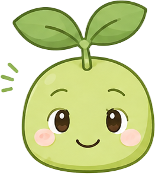
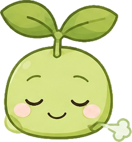
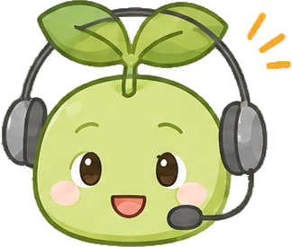

<!DOCTYPE html>
<html lang="ja" data-theme="light">
<head>
<meta charset="utf-8">
<meta name="viewport" content="width=device-width,initial-scale=1,viewport-fit=cover">
<title>まなびのいばしょ｜学習・生活支援アプリ プロトタイプ</title>
<meta name="description" content="学校生活に不安やストレスを感じ、登校や学習の継続が難しい子どもを支援するアプリのプロトタイプ">
<link rel="preconnect" href="https://fonts.googleapis.com">
<link rel="preconnect" href="https://fonts.gstatic.com" crossorigin>
<link href="https://fonts.googleapis.com/css2?family=M+PLUS+Rounded+1c:wght@400;500;700;800&family=Noto+Sans+JP:wght@400;500;700;900&family=Zen+Maru+Gothic:wght@400;500;700;900&display=swap" rel="stylesheet">
<style>
/* ============================================================
   デザイントークン
   ============================================================ */
:root{
  color-scheme: light;
  --stage:#e7ebe0;
  --stage-2:#dbe2d2;
  --page:#fbfbf9;
  --card:#ffffff;
  --soft:#f1f4ec;
  --soft-2:#eaefe3;
  --line:#dfe5d8;
  --line-2:#e9eee2;
  --ink:#22302a;
  --ink2:#5c6b5f;
  --ink3:#889484;
  --brand:#4b7f3a;
  --brand-deep:#355f2b;
  --brand-soft:#eef5e8;
  --brand-line:#8fb87a;
  --warm:#b7793a;
  --warm-soft:#f8eddf;
  --mood:#6d9c4c;
  --mood-soft:#f0f6e9;
  --talk:#3f8567;
  --talk-soft:#e3f2ea;
  --ok:#3f7d2e;
  --attention:#b7793a;
  --attention-soft:#f9efe0;
  /* チャート */
  --c1:#6fa958;
  --c2:#2e8f63;
  --c3:#d98a3d;
  --grid:#e7eae0;
  --axis:#ccd3c2;
  --muted:#87907f;
  --shadow:0 1px 2px rgba(30,38,26,.05), 0 8px 24px rgba(30,38,26,.06);
  --shadow-lg:0 30px 70px rgba(22,30,18,.26), 0 6px 18px rgba(22,30,18,.13);
  --r-lg:22px;
  --r-md:16px;
  --r-sm:12px;
  --fun:#ff9d5c;
  --fun-deep:#c96a2e;
  --fun-soft:#fff1e1;
  /* タブは常にブランドカラーで統一（system.pdfのデザインに合わせる） */
  --tab-home:#4b7f3a;
  --tab-study:#4b7f3a;
  --tab-rec:#4b7f3a;
  --tab-consult:#4b7f3a;
  --tab-profile:#4b7f3a;
}
:root[data-theme="dark"]{
  color-scheme: dark;
  --stage:#0e120d;
  --stage-2:#131810;
  --page:#161b13;
  --card:#1e2519;
  --soft:#232b1e;
  --soft-2:#262f20;
  --line:#303b28;
  --line-2:#29331f;
  --ink:#eaf0e5;
  --ink2:#b4c1ab;
  --ink3:#818e78;
  --brand:#7fbe68;
  --brand-deep:#a3d890;
  --brand-soft:#233620;
  --brand-line:#3a5c30;
  --warm:#dda468;
  --warm-soft:#33281c;
  --mood:#a7cb83;
  --mood-soft:#293620;
  --talk:#7cb99c;
  --talk-soft:#1d2f27;
  --ok:#7fbe68;
  --attention:#dda468;
  --attention-soft:#33281c;
  --c1:#8fcb78;
  --c2:#6fcba0;
  --c3:#e3a868;
  --fun:#ffb583;
  --fun-deep:#ffcfa3;
  --fun-soft:#3a2c1e;
  --grid:#2a3324;
  --axis:#3c4635;
  --muted:#93a089;
  --shadow:0 1px 2px rgba(0,0,0,.3), 0 8px 24px rgba(0,0,0,.28);
  --shadow-lg:0 30px 70px rgba(0,0,0,.6), 0 6px 18px rgba(0,0,0,.4);
  --tab-home:#7fbe68;
  --tab-study:#7fbe68;
  --tab-rec:#7fbe68;
  --tab-consult:#7fbe68;
  --tab-profile:#7fbe68;
}
*{box-sizing:border-box;-webkit-tap-highlight-color:transparent}
html,body{margin:0;padding:0;height:100%;overflow:hidden;position:fixed;inset:0;width:100%;overscroll-behavior:none}
body{
  font-family: system-ui,-apple-system,"Hiragino Kaku Gothic ProN","Noto Sans JP","Yu Gothic UI",Meiryo,sans-serif;
  background:var(--stage);
  color:var(--ink);
  -webkit-font-smoothing:antialiased;
  font-size:15px;
  line-height:1.7;
}
button{font:inherit;color:inherit;border:0;background:none;cursor:pointer}
input,textarea,select{font:inherit;color:inherit}
svg{display:block}

/* ============================================================
   ステージ（画面全体のコンテナ／スマホサイズで中央寄せ）
   ============================================================ */
.stage{height:100%;display:flex;justify-content:center;background:var(--stage);overflow:hidden}

.phone{
  width:100%;max-width:430px;height:100%;background:var(--page);
  position:relative;overflow:hidden;
  display:flex;flex-direction:column;flex:none;
}
@media (min-width:431px){
  .phone{box-shadow:var(--shadow-lg)}
}

.appbar{
  flex:none;display:flex;align-items:center;gap:8px;min-height:50px;padding:calc(10px + env(safe-area-inset-top)) 12px 10px;
  background:var(--page);position:relative;z-index:20;
}
.appbar.with-line{border-bottom:1px solid var(--line-2)}
.appbar h1{margin:0;font-size:17px;font-weight:700;letter-spacing:.01em;flex:1;min-width:0;
  overflow:hidden;text-overflow:ellipsis;white-space:nowrap}
.appbar .sub{font-size:11.5px;color:var(--ink3);font-weight:500;display:block;line-height:1.4}
.iconbtn{
  width:36px;height:36px;flex:none;border-radius:12px;display:grid;place-items:center;color:var(--ink2);
}
.iconbtn:hover{background:var(--soft);color:var(--ink)}

.view{
  flex:1;min-height:0;overflow-y:auto;overflow-x:hidden;background:var(--page);
  padding:2px 16px 24px;scroll-behavior:smooth;
  -webkit-overflow-scrolling:touch;overscroll-behavior:contain;
}
.view::-webkit-scrollbar{width:0}
.view.no-pad{padding-left:0;padding-right:0}

.tabbar{
  flex:none;display:grid;grid-template-columns:repeat(5,1fr);gap:2px;
  padding:7px 6px calc(7px + env(safe-area-inset-bottom));
  background:var(--card);border-top:1px solid var(--line);
}
.tabbar button{
  display:flex;flex-direction:column;align-items:center;gap:3px;padding:4px 2px 2px;border-radius:12px;
  color:var(--ink3);font-size:10.5px;font-weight:600;letter-spacing:.01em;
}
.tabbar button[aria-current="page"]{color:var(--brand)}
.tabbar button[aria-current="page"] .tabdot{opacity:1}
/* タブごとの色（現在の画面に関係なく、常にそのタブ自身の色で表示） */
.tabbar button[data-id="home"][aria-current="page"]{color:var(--tab-home)}
.tabbar button[data-id="study"][aria-current="page"]{color:var(--tab-study)}
.tabbar button[data-id="rec"][aria-current="page"]{color:var(--tab-rec)}
.tabbar button[data-id="consult"][aria-current="page"]{color:var(--tab-consult)}
.tabbar button[data-id="profile"][aria-current="page"]{color:var(--tab-profile)}
.tabdot{width:4px;height:4px;border-radius:50%;background:currentColor;opacity:0;margin-top:-1px}

/* ============================================================
   共通コンポーネント
   ============================================================ */
.card{background:var(--card);border-radius:var(--r-lg);padding:16px;box-shadow:var(--shadow);border:1px solid var(--line-2)}
.card + .card{margin-top:12px}
.stack{display:flex;flex-direction:column;gap:12px}
.stack-sm{display:flex;flex-direction:column;gap:8px}
.row{display:flex;align-items:center;gap:10px}
.row-between{display:flex;align-items:center;justify-content:space-between;gap:10px}
.grow{flex:1;min-width:0}
.sec-title{font-size:13px;font-weight:700;color:var(--ink2);letter-spacing:.04em;margin:20px 2px 9px;display:flex;align-items:center;gap:7px}
.sec-title:first-child{margin-top:8px}
.sec-title .sec-line{flex:1;height:1px;background:var(--line)}
.muted{color:var(--ink3)}
.small{font-size:12.5px}
.tiny{font-size:11.5px}
.lead{font-size:14px;color:var(--ink2);line-height:1.8}
.strong{font-weight:700}
.center{text-align:center}
.nowrap{white-space:nowrap}
.mt8{margin-top:8px}.mt12{margin-top:12px}.mt16{margin-top:16px}.mt4{margin-top:4px}
.mb0{margin-bottom:0}
hr.sep{border:0;border-top:1px solid var(--line);margin:14px 0}

.btn{
  display:inline-flex;align-items:center;justify-content:center;gap:7px;
  padding:12px 18px;border-radius:14px;font-size:14.5px;font-weight:700;
  background:var(--brand);color:#fff;
  box-shadow:0 2px 6px rgba(53,95,43,.22);
  transition:transform .08s ease, filter .15s ease, box-shadow .08s ease;
}
:root[data-theme="dark"] .btn{color:#0e1417}
.btn:active{transform:scale(.98);box-shadow:0 1px 3px rgba(53,95,43,.22)}
.btn:hover{filter:brightness(1.05)}
.btn.block{display:flex;width:100%}
.btn.ghost{background:var(--soft);color:var(--ink2);box-shadow:none;border:1px solid var(--line)}
.btn.ghost:active{transform:scale(.98)}
.btn.ghost:hover{color:var(--ink)}
.btn.soft{background:var(--brand-soft);color:var(--brand-deep);box-shadow:none;border:1px solid var(--brand-line)}
.btn.soft:active{transform:scale(.98)}
.btn.warm{background:var(--warm-soft);color:var(--warm);box-shadow:none;border:1px solid transparent}
.btn.warm:active{transform:scale(.98)}
.btn.sm{padding:8px 14px;font-size:13px;border-radius:11px;box-shadow:0 2px 5px rgba(53,95,43,.2)}
.btn.sm:active{transform:scale(.97)}
.btn.sm.soft{box-shadow:none}
.btn.sm.ghost{box-shadow:none}
.btn.sm.warm{box-shadow:none}
.btn.lg{padding:14px 20px;font-size:15.5px}
.btn[disabled]{opacity:.45;pointer-events:none}

.chip{
  display:inline-flex;align-items:center;gap:6px;padding:7px 13px;border-radius:999px;
  background:var(--soft);color:var(--ink2);font-size:12.5px;font-weight:600;border:1px solid var(--line);
}
.chip[aria-pressed="true"]{background:var(--brand-soft);color:var(--brand-deep);border-color:var(--brand-line)}
.chip{transition:transform .1s ease}
.chip:active{transform:scale(.94)}
.chips{display:flex;flex-wrap:wrap;gap:7px}

.pill{display:inline-flex;align-items:center;gap:5px;padding:3px 9px;border-radius:999px;font-size:11px;font-weight:700;letter-spacing:.02em}
.pill.done{background:var(--talk-soft);color:var(--ok)}
.pill.doing{background:var(--brand-soft);color:var(--brand-deep)}
.pill.todo{background:var(--soft);color:var(--ink3)}
.pill.attn{background:var(--attention-soft);color:var(--attention)}
.pill.mood{background:var(--mood-soft);color:var(--mood)}
.pill.warm{background:var(--warm-soft);color:var(--warm)}

.listitem{
  display:flex;align-items:center;gap:12px;width:100%;text-align:left;
  background:var(--card);border:1px solid var(--line-2);border-radius:var(--r-md);
  padding:13px 14px;box-shadow:var(--shadow);
}
.listitem:hover{border-color:var(--brand-line)}
.listitem .li-title{font-size:14.5px;font-weight:700;line-height:1.5}
.listitem .li-sub{font-size:12px;color:var(--ink3);line-height:1.5}
.avatar{
  width:42px;height:42px;flex:none;border-radius:14px;display:grid;place-items:center;
  background:var(--brand-soft);color:var(--brand-deep);font-size:19px;font-weight:700;
}
.avatar.sm{width:34px;height:34px;border-radius:11px;font-size:15px}
.avatar.warm{background:var(--warm-soft);color:var(--warm)}
.avatar.mood{background:var(--mood-soft);color:var(--mood)}
.avatar.talk{background:var(--talk-soft);color:var(--talk)}
.avatar.soft{background:var(--soft);color:var(--ink2)}

/* 気分セレクター（まめの芽キャラクターの表情イラスト） */
.moodpick{display:grid;grid-template-columns:repeat(5,1fr);gap:6px}
.moodpick button{
  display:flex;flex-direction:column;align-items:center;gap:5px;padding:10px 2px 8px;border-radius:var(--r-md);
  border:1.5px solid transparent;background:var(--soft);font-size:11px;font-weight:600;color:var(--ink3);
  transition:transform .1s ease;
}
.moodpick button .face img{display:block;opacity:.62;transition:opacity .15s ease, transform .15s ease}
.moodpick button[aria-pressed="true"]{background:var(--mood-soft);border-color:var(--mood);color:var(--mood);transform:translateY(-2px)}
.moodpick button[aria-pressed="true"] .face img{opacity:1;transform:scale(1.1)}

/* チェックリスト */
.check{
  display:flex;align-items:center;gap:11px;width:100%;text-align:left;padding:11px 12px;border-radius:var(--r-md);
  background:var(--soft);border:1px solid transparent;
}
.check .box{
  width:22px;height:22px;flex:none;border-radius:7px;border:1.8px solid var(--line);background:var(--card);
  display:grid;place-items:center;color:transparent;
}
.check[aria-pressed="true"]{background:var(--talk-soft);border-color:rgba(78,138,112,.25)}
.check[aria-pressed="true"] .box{background:var(--ok);border-color:var(--ok);color:#fff}
.check[aria-pressed="true"] .lbl{color:var(--ok)}
.check .lbl{font-size:14px;font-weight:600;flex:1}
.check .time{font-size:11.5px;color:var(--ink3);font-variant-numeric:tabular-nums}

/* 進捗バー */
.bar{height:7px;border-radius:99px;background:var(--soft-2);overflow:hidden}
.bar > i{display:block;height:100%;border-radius:99px;background:var(--brand)}
.bar.warm > i{background:var(--warm)}
.bar.ok > i{background:var(--ok)}

/* 吹き出し */
.datesep{text-align:center;margin:4px 0 14px}
.datesep span{background:var(--soft);color:var(--ink3);font-size:11px;font-weight:700;padding:4px 13px;border-radius:999px}
.bubble-row{display:flex;gap:8px;margin-bottom:12px;align-items:flex-end}
.bubble-row.me{flex-direction:row-reverse}
.bubble{
  max-width:74%;padding:10px 13px;border-radius:16px;font-size:14px;line-height:1.65;
  background:var(--card);border:1px solid var(--line-2);box-shadow:var(--shadow);
}
.bubble-row.me .bubble{background:var(--brand-soft);border-color:var(--brand-line);color:var(--brand-deep)}
.bubble-time{font-size:10.5px;color:var(--ink3);align-self:flex-end;padding-bottom:3px;flex:none}

.composer{
  display:flex;gap:8px;align-items:flex-end;padding:10px 12px calc(10px + env(safe-area-inset-bottom));
  background:var(--card);border-top:1px solid var(--line);flex:none;
}
.composer textarea{
  flex:1;resize:none;border:1px solid var(--line);background:var(--soft);border-radius:16px;
  padding:10px 14px;font-size:14px;line-height:1.6;max-height:96px;min-height:42px;outline:none;
}
.composer textarea:focus{border-color:var(--brand-line);background:var(--card)}
.sendbtn{width:42px;height:42px;flex:none;border-radius:14px;background:var(--brand);color:#fff;display:grid;place-items:center}
:root[data-theme="dark"] .sendbtn{color:#0e1417}

/* フォーム */
.field{display:block;margin-bottom:13px}
.field > span{display:block;font-size:12.5px;font-weight:700;color:var(--ink2);margin-bottom:6px}
.field input,.field select,.field textarea{
  width:100%;padding:11px 13px;border-radius:12px;border:1px solid var(--line);background:var(--soft);
  font-size:14.5px;outline:none;
}
.field input:focus,.field select:focus,.field textarea:focus{border-color:var(--brand);background:var(--card)}
.field textarea{min-height:96px;resize:vertical;line-height:1.7}
.field.err input{border-color:var(--attention);background:var(--attention-soft)}
.hint{font-size:11.5px;color:var(--ink3);margin-top:5px;line-height:1.6}
.errtext{font-size:11.5px;color:var(--attention);margin-top:5px;line-height:1.6}

/* トグル */
.toggle{
  width:46px;height:27px;border-radius:99px;background:var(--soft-2);position:relative;flex:none;
  border:1px solid var(--line);transition:background .18s ease;
}
.toggle::after{
  content:"";position:absolute;top:2px;left:2px;width:21px;height:21px;border-radius:50%;
  background:var(--card);box-shadow:0 1px 3px rgba(0,0,0,.2);transition:transform .18s ease;
}
.toggle[aria-pressed="true"]{background:var(--brand);border-color:var(--brand)}
.toggle[aria-pressed="true"]::after{transform:translateX(19px)}

/* 選択肢（クイズ） */
.choice{
  display:flex;align-items:center;gap:11px;width:100%;text-align:left;padding:13px 14px;border-radius:var(--r-md);
  background:var(--card);border:1.5px solid var(--line);font-size:14.5px;font-weight:600;
}
.choice .mark{width:22px;height:22px;flex:none;border-radius:50%;border:1.8px solid var(--line);display:grid;place-items:center;font-size:11px;color:transparent}
.choice[aria-pressed="true"]{border-color:var(--brand);background:var(--brand-soft)}
.choice[aria-pressed="true"] .mark{border-color:var(--brand);background:var(--brand);color:#fff}
.choice.correct{border-color:var(--ok);background:var(--talk-soft)}
.choice.correct .mark{border-color:var(--ok);background:var(--ok);color:#fff}
.choice.wrong{border-color:var(--attention);background:var(--attention-soft)}
.choice.wrong .mark{border-color:var(--attention);background:var(--attention);color:#fff}
.choice[disabled]{pointer-events:none;opacity:1}

/* お知らせ（やわらかい合図） */
.signal{
  display:flex;gap:10px;align-items:flex-start;padding:12px 13px;border-radius:var(--r-md);
  background:var(--attention-soft);border:1px solid rgba(183,121,58,.2);
}
.signal .sdot{width:8px;height:8px;border-radius:50%;background:var(--attention);flex:none;margin-top:7px}
.signal .stxt{font-size:13px;line-height:1.65;color:var(--ink)}
.signal.calm{background:var(--brand-soft);border-color:var(--brand-line)}
.signal.calm .sdot{background:var(--brand)}

.note{
  background:var(--soft);border:1px dashed var(--line);border-radius:var(--r-md);
  padding:11px 13px;font-size:12px;color:var(--ink3);line-height:1.75;
}

.empty{padding:40px 20px;text-align:center;color:var(--ink3);font-size:13.5px;line-height:1.9}
.empty .ei{display:flex;justify-content:center;margin-bottom:10px;opacity:.55}

/* タブ（画面内） */
.segtabs{display:flex;gap:4px;background:var(--soft);padding:4px;border-radius:14px;margin:8px 0 4px}
.segtabs button{flex:1;padding:8px 4px;border-radius:11px;font-size:13px;font-weight:700;color:var(--ink3)}
.segtabs button[aria-selected="true"]{background:var(--card);color:var(--ink);box-shadow:0 1px 3px rgba(0,0,0,.07)}

/* 統計タイル */
.tiles{display:grid;grid-template-columns:repeat(2,1fr);gap:9px}
.tile{background:var(--card);border:1px solid var(--line-2);border-radius:var(--r-md);padding:12px 13px;box-shadow:var(--shadow)}
.tile .tv{font-size:23px;font-weight:800;line-height:1.25;letter-spacing:-.01em}
.tile .tv small{font-size:12.5px;font-weight:700;margin-left:2px;color:var(--ink2)}
.tile .tl{font-size:11.5px;color:var(--ink3);font-weight:600;margin-top:1px}

/* チャート */
.chartwrap{position:relative}
.chart-cap{font-size:12.5px;font-weight:700;color:var(--ink2)}
.chart-sub{font-size:11.5px;color:var(--ink3);line-height:1.6;margin-top:2px}
.legend{display:flex;flex-wrap:wrap;gap:12px;margin-top:10px}
.legend span{display:inline-flex;align-items:center;gap:6px;font-size:11.5px;color:var(--ink2);font-weight:600}
.legend i{width:10px;height:10px;border-radius:3px;flex:none}
.tip{
  position:absolute;pointer-events:none;opacity:0;transform:translate(-50%,-100%);
  background:var(--ink);color:var(--card);font-size:11.5px;font-weight:600;line-height:1.5;
  padding:6px 9px;border-radius:9px;white-space:nowrap;transition:opacity .12s ease;z-index:5;
  box-shadow:0 4px 14px rgba(0,0,0,.18);
}
.tip.on{opacity:1}
.datatable{width:100%;border-collapse:collapse;font-size:12.5px;margin-top:10px}
.datatable th,.datatable td{padding:6px 8px;text-align:right;border-bottom:1px solid var(--line-2);font-variant-numeric:tabular-nums}
.datatable th:first-child,.datatable td:first-child{text-align:left;font-variant-numeric:normal}
.datatable th{color:var(--ink3);font-weight:600;font-size:11.5px}
.linkbtn{font-size:12px;font-weight:700;color:var(--brand);padding:4px 2px}
.linkbtn:hover{text-decoration:underline}

/* ログイン／アカウント作成 */
.login{display:flex;flex-direction:column;min-height:100%;padding:26px 22px 22px;justify-content:center}
.logo{
  width:112px;height:112px;
  display:grid;place-items:center;margin:0 auto 10px;
  position:relative;
}
.logo img{filter:drop-shadow(0 10px 18px rgba(53,95,43,.18))}
.logo .spark-a{position:absolute;top:-2px;right:-6px}
.logo .spark-b{position:absolute;bottom:14px;left:-10px;opacity:.8}
.rolepick{display:grid;grid-template-columns:1fr 1fr;gap:9px}
.rolepick button{
  padding:15px 10px;border-radius:var(--r-md);border:1.5px solid var(--line);background:var(--card);
  font-size:13.5px;font-weight:700;color:var(--ink2);display:flex;flex-direction:column;align-items:center;gap:7px;
}
.rolepick button small{font-size:11px;font-weight:500;color:var(--ink3)}
.rolepick button[aria-pressed="true"]{border-color:var(--brand);background:var(--brand-soft);color:var(--brand-deep)}
.rolepick button[aria-pressed="true"] small{color:var(--brand-deep);opacity:.8}
.gradepick{display:grid;grid-template-columns:repeat(2,1fr);gap:8px}
.gradepick button{
  padding:13px 6px;border-radius:var(--r-md);border:1.5px solid var(--line);background:var(--card);
  font-size:13.5px;font-weight:700;color:var(--ink2);
}
.gradepick button[aria-pressed="true"]{border-color:var(--brand);background:var(--brand-soft);color:var(--brand-deep)}
.steps{display:flex;gap:6px;justify-content:center;margin-bottom:18px}
.steps i{width:22px;height:3px;border-radius:99px;background:var(--line)}
.steps i.on{background:var(--brand)}
.linkline{text-align:center;font-size:12.5px;color:var(--ink2);margin-top:14px}
.linkline button{color:var(--brand);font-weight:700}

/* マスコット（案内キャラクター） */
.mascot-row{display:flex;align-items:flex-end;gap:8px;margin-bottom:12px}
.mascot-pop{flex:none;filter:drop-shadow(0 3px 6px rgba(63,125,148,.18))}
.mascot-bubble{
  position:relative;flex:1;background:var(--card);border:1px solid var(--line-2);
  border-radius:var(--r-md);padding:10px 13px;font-size:12.5px;font-weight:600;color:var(--ink2);
  line-height:1.6;box-shadow:var(--shadow);
}
.mascot-bubble::before{
  content:'';position:absolute;left:-5px;bottom:12px;width:10px;height:10px;
  background:var(--card);border-left:1px solid var(--line-2);border-bottom:1px solid var(--line-2);
  transform:rotate(45deg);border-radius:0 0 0 3px;
}
.mascot-center{display:flex;flex-direction:column;align-items:center;gap:10px;position:relative}
.mascot-center .sparkle-a{position:absolute;top:-2px;right:22%}
.mascot-center .sparkle-b{position:absolute;bottom:6px;left:18%;opacity:.8}

/* 画面インデックス */
.sheet{
  position:absolute;inset:0;background:rgba(16,20,24,.45);z-index:60;display:none;
  align-items:flex-end;backdrop-filter:blur(2px);
}
.sheet.on{display:flex}
.sheet-inner{
  width:100%;max-height:86%;overflow-y:auto;background:var(--page);border-radius:26px 26px 0 0;
  padding:8px 16px calc(20px + env(safe-area-inset-bottom));
}
.sheet-grab{width:38px;height:4px;border-radius:99px;background:var(--line);margin:6px auto 12px}
.idxgrid{display:grid;grid-template-columns:1fr 1fr;gap:7px}
.idxgrid button{
  padding:10px 11px;border-radius:12px;background:var(--card);border:1px solid var(--line-2);
  font-size:12.5px;font-weight:600;text-align:left;color:var(--ink2);line-height:1.4;
}
.idxgrid button:hover{border-color:var(--brand-line);color:var(--ink)}

/* トースト */
.toast{
  position:absolute;left:50%;bottom:88px;transform:translate(-50%,10px);z-index:70;
  background:var(--ink);color:var(--card);font-size:13px;font-weight:600;padding:10px 16px;border-radius:14px;
  opacity:0;transition:opacity .2s ease, transform .2s ease;pointer-events:none;max-width:82%;text-align:center;line-height:1.6;
}
.toast.on{opacity:1;transform:translate(-50%,0)}

/* マスコットのリアクション（きろく・達成のとき） */
.mtoast{
  position:absolute;left:50%;bottom:88px;transform:translate(-50%,10px) scale(.94);z-index:71;
  display:flex;align-items:center;gap:9px;background:var(--card);color:var(--ink);
  padding:9px 16px 9px 9px;border-radius:999px;box-shadow:var(--shadow-lg);
  border:1px solid var(--brand-line);opacity:0;transition:opacity .22s ease, transform .22s ease;
  pointer-events:none;max-width:86%;
}
.mtoast.on{opacity:1;transform:translate(-50%,0) scale(1)}
.mtoast .mtoast-face{flex:none;display:flex}
.mtoast .mtoast-msg{font-size:12.5px;font-weight:700;line-height:1.5}

/* 連続記録バッジ */
.streak-pill{
  display:flex;align-items:center;gap:4px;flex:none;color:var(--fun-deep);
  background:var(--fun-soft);border:1px solid var(--fun);font-size:11px;font-weight:800;
  padding:6px 9px 6px 7px;border-radius:999px;white-space:nowrap;align-self:flex-start;
}

.fadein{animation:fade .26s ease both}
@keyframes fade{from{opacity:0;transform:translateY(6px)}to{opacity:1;transform:none}}

@media (prefers-reduced-motion:reduce){*{animation:none!important;transition:none!important}}

/* 文字の大きさ（設定） */
:root[data-fontsize="sm"] #app{zoom:0.92}
:root[data-fontsize="lg"] #app{zoom:1.16}

/* 文字のフォント（設定） */
:root[data-font="zenmaru"] #app{font-family:"Zen Maru Gothic",system-ui,"Hiragino Kaku Gothic ProN","Noto Sans JP",sans-serif}
:root[data-font="notosans"] #app{font-family:"Noto Sans JP",system-ui,"Hiragino Kaku Gothic ProN",sans-serif}
:root[data-font="mplus"] #app{font-family:"M PLUS Rounded 1c",system-ui,"Hiragino Kaku Gothic ProN","Noto Sans JP",sans-serif}

/* ============================================================
   TARGET UI OVERRIDES — match 2026-08-28 reference screens
   ============================================================ */
:root{
  --page:#fbfbf9;
  --card:#fff;
  --soft:#f4f6f1;
  --soft-2:#edf1e9;
  --line:#dfe5dc;
  --line-2:#e7ebe4;
  --ink:#28332c;
  --ink2:#657064;
  --ink3:#9aa39a;
  --brand:#4b7f3a;
  --brand-deep:#3d6b31;
  --brand-soft:#eef5e8;
  --brand-line:#b9d1ad;
  --mood:#6f9d50;
  --mood-soft:#eff5e9;
  --talk:#5f8f74;
  --talk-soft:#e7f1ea;
}
body{font-family:"M PLUS Rounded 1c","Noto Sans JP",system-ui,-apple-system,sans-serif;font-size:13px;line-height:1.55}
.phone{max-width:430px}
.appbar{min-height:45px;padding:calc(7px + env(safe-area-inset-top)) 11px 7px;background:var(--page)}
.appbar h1{font-size:16px;font-weight:800;letter-spacing:.01em}
.appbar .sub{font-size:9.5px;color:#a2aaa1;margin-top:1px;font-weight:500}
.iconbtn{width:30px;height:30px;border-radius:10px;color:#6a746c}
.iconbtn svg{width:18px;height:18px}
.view{padding:0 10px 18px}
.card{border-radius:12px;padding:12px;box-shadow:none;border:1px solid #e5ebe3}
.card + .card{margin-top:8px}
.sec-title{font-size:10.5px;color:#445047;letter-spacing:.035em;margin:13px 2px 6px}
.sec-title:first-child{margin-top:5px}
.sec-title .sec-line{display:none}
.btn{border-radius:11px;padding:10px 14px;font-size:13px}
.btn.sm{padding:7px 11px;font-size:11.5px;border-radius:10px}
.btn.lg{padding:11px 16px;font-size:13.5px}
.listitem{border-radius:10px;padding:10px 11px;box-shadow:none;border:1px solid #e5ebe3}
.listitem .li-title{font-size:12.5px}
.listitem .li-sub{font-size:10px}
.avatar{border-radius:11px}
.chip{padding:5px 9px;font-size:10px;border-radius:999px}
.pill{font-size:9.5px;padding:3px 7px}
.note{font-size:9.5px;padding:9px 10px;border-radius:9px}
.small{font-size:10.5px}
.tiny{font-size:9.5px}
.lead{font-size:11px}
.tabbar{gap:0;padding:6px 5px calc(6px + env(safe-area-inset-bottom));border-top:1px solid #e2e7e0}
.tabbar button{gap:2px;padding:3px 1px 1px;font-size:8.5px;border-radius:8px}
.tabbar button svg{width:16px;height:16px}
.tabdot{display:none}

/* mood selector */
.moodpick{gap:3px}
.moodpick button{padding:4px 1px 5px;gap:2px;border-radius:9px;background:transparent;border:1px solid transparent;font-size:8.8px;color:#9aa39a}
.moodpick button .face img{width:30px!important;height:30px!important;opacity:.98;}
.moodpick button[aria-pressed="true"]{background:#fff;border-color:#cfe1c5;color:var(--brand);transform:none}
.moodpick button[aria-pressed="true"] .face img{transform:none}

/* compact top/home */
.target-home{padding-top:1px}
.home-hero{display:flex;flex-direction:column;align-items:center;padding-top:2px}
.home-hero .hero-face{width:74px;height:74px;object-fit:contain}
.home-greeting{font-size:12.5px;font-weight:800;color:#233128;margin-top:1px}
.home-helper{display:flex;align-items:center;gap:8px;margin-top:7px;margin-bottom:8px}
.home-helper .mini-face{width:34px;height:34px;object-fit:contain;flex:none}
.home-helper .helper-bubble{background:#fff;border:1px solid #e6ebe5;border-radius:11px;padding:7px 11px;font-size:9.5px;line-height:1.45;color:#687268;flex:1}
.home-section-title{font-size:10.5px;font-weight:800;color:#445047;margin:8px 2px 6px}
.home-mood-card{background:transparent;border:0;padding:0;margin:0}
.home-todos{display:flex;flex-direction:column;gap:6px}
.home-todo{display:flex;align-items:center;gap:9px;background:#fff;border:1px solid #e6ebe5;border-radius:9px;padding:7px 9px;text-align:left}
.home-todo .todo-icon{width:27px;height:27px;border-radius:8px;display:grid;place-items:center;background:#eef5e8;color:#5b8c45;flex:none}
.home-todo .todo-face{width:27px;height:27px;object-fit:contain;display:block}
.home-todo .todo-title{font-size:10.5px;font-weight:800;color:#3a473e}
.home-todo .todo-sub{font-size:8.5px;color:#a0a8a0;margin-top:1px}
.home-effort{background:#fff;border:1px solid #e4ebe2;border-radius:11px;padding:9px 10px 8px}
.effort-head{display:flex;justify-content:space-between;align-items:center;margin-bottom:5px}
.effort-head span:first-child{font-size:9.5px;color:#9ba49a}
.effort-head strong{font-size:11px;color:#39483d}
.mini-bars{height:64px;display:flex;align-items:flex-end;gap:7px;padding:0 3px}
.mini-bar-col{flex:1;height:100%;display:flex;align-items:flex-end;justify-content:center;position:relative}
.mini-bar{width:14px;max-width:72%;background:#4f8040;border-radius:4px 4px 2px 2px}
.mini-bar.pale{background:#a9c99d}
.mini-day-labels{display:grid;grid-template-columns:repeat(7,1fr);font-size:7.5px;color:#a6ada7;text-align:center;margin-top:2px}

/* mood record */
.target-rec .segtabs{margin:3px 0 7px;background:#f1f4ef;padding:3px;border-radius:8px}
.target-rec .segtabs button{padding:6px 3px;font-size:9.5px;border-radius:7px;color:#7f8880}
.target-rec .segtabs button[aria-selected="true"]{background:#fff;color:#344139;box-shadow:0 1px 3px rgba(44,62,45,.05)}
.rec-mood-card{background:#eff5e9;border:1px solid #e0e8db;border-radius:12px;padding:10px}
.rec-mood-card .card-title{font-size:11px;font-weight:800;color:#465249}
.rec-mood-card .date{font-size:8.5px;color:#9aa49a;margin-top:1px;margin-bottom:7px}
.rec-msg{display:flex;align-items:center;gap:6px;background:#fff;border-radius:999px;border:1px solid #edf0eb;padding:4px 8px;margin-top:8px;width:max-content;max-width:100%}
.rec-msg img{width:25px;height:25px;object-fit:contain}
.rec-msg span{font-size:8.5px;color:#4e5b51;line-height:1.35}
.rec-chart-card{background:#fff;border:1px solid #e5ebe3;border-radius:11px;padding:10px;margin-top:8px}
.rec-chart-card .chart-cap{font-size:10px;font-weight:800;color:#3f4a42}
.rec-chart-card .chart-sub{font-size:8px;color:#a0a8a0;line-height:1.4;margin-top:2px}
.target-rec .datatable{font-size:9px}
.target-rec .linkbtn{font-size:9px;padding:0;color:#4b7f3a}
.target-rec .stack-sm{gap:6px}
.history-card{display:flex;align-items:center;gap:7px;background:#fff;border:1px solid #e6ebe4;border-radius:9px;padding:8px 9px}
.history-card img{width:26px;height:26px;object-fit:contain}
.history-card .history-title{font-size:9.5px;font-weight:800;color:#455048}
.history-card .history-note{font-size:8px;color:#a0a8a0;margin-top:1px}
.more-link{display:inline-flex;margin-top:6px;font-size:9px;font-weight:800;color:#4b7f3a}

/* profile */
.target-profile .profile-card{background:#fff;border:1px solid #e4ebe2;border-radius:11px;padding:9px 10px;display:flex;align-items:center;gap:8px}
.target-profile .profile-card .face{width:38px;height:38px;object-fit:contain;flex:none}
.target-profile .profile-card .name{font-size:11px;font-weight:800;color:#364239}
.target-profile .profile-card .desc{font-size:8.5px;color:#a0a8a0;margin-top:1px}
.target-profile .profile-card .chev{margin-left:auto;color:#a4aca4}
.target-profile .profile-section-title{font-size:9.5px;font-weight:800;color:#4d584f;margin:11px 2px 5px}
.target-profile .setting-card{background:#fff;border:1px solid #e4ebe2;border-radius:10px;padding:7px 9px}
.target-profile .setting-row{display:flex;align-items:center;gap:6px;padding:5px 0}
.target-profile .setting-row + .setting-row{border-top:1px solid #f0f2ef}
.target-profile .setting-row .row-title{font-size:9.5px;font-weight:800;color:#435046}
.target-profile .setting-row .row-desc{font-size:8px;color:#a0a8a0;margin-top:1px;line-height:1.35}
.target-profile .pace{display:flex;align-items:center;gap:7px;background:#fff;border:1px solid #e5ebe3;border-radius:9px;padding:7px 8px}
.target-profile .pace + .pace{margin-top:5px}
.target-profile .pace.selected{background:#eef5e8;border-color:#c4dab9}
.target-profile .pace-check{width:15px;height:15px;border:1px solid #d9e2d6;border-radius:4px;background:#fff;display:grid;place-items:center;color:transparent;flex:none}
.target-profile .pace.selected .pace-check{background:#5a8a49;border-color:#5a8a49;color:#fff}
.target-profile .pace-title{font-size:9.5px;font-weight:800;color:#3f4a42}
.target-profile .pace-sub{font-size:7.5px;color:#9ca69c;margin-left:2px;font-weight:500}
.target-profile .tiny-note{font-size:7.5px;color:#9da69c;margin:5px 2px 0;line-height:1.4}
.target-profile .setting-toggle{margin-left:auto}
.target-profile .support-card + .support-card{margin-top:6px}
.target-profile .support-card{background:#fff;border:1px solid #e4ebe2;border-radius:10px;padding:7px 9px}
.target-profile .support-card p{font-size:7.8px;color:#a0a8a0;line-height:1.35;margin:3px 30px 1px 0}
.target-profile .toggle{width:31px;height:19px;border-radius:999px;background:#f0f2ef;border-color:#dfe4df}
.target-profile .toggle::after{width:15px;height:15px;top:1px;left:1px}
.target-profile .toggle[aria-pressed="true"]::after{transform:translateX(12px)}
.target-profile .toggle[aria-pressed="true"]{background:#4f8541;border-color:#4f8541}
.target-profile .logout-btn{background:#fff;border:1px solid #e4ebe2;color:#435046;box-shadow:none;font-size:10px}
.target-profile .prototype-link{display:block;text-align:center;font-size:8.5px;font-weight:800;color:#4b7f3a;margin-top:10px}

</style>
</head>
<body>
<div class="stage">
  <div class="phone">
    <div id="app" style="display:flex;flex-direction:column;flex:1;min-height:0"></div>
    <div class="sheet" id="sheet">
      <div class="sheet-inner">
        <div class="sheet-grab"></div>
        <div id="sheetBody"></div>
      </div>
    </div>
    <div class="toast" id="toast"></div>
    <div class="mtoast" id="mtoast"><span class="mtoast-face"></span><span class="mtoast-msg"></span></div>
  </div>
</div>

<script>
"use strict";
/* ============================================================
   1. アイコン
   ============================================================ */
const ICONS = {
  menu:'<path d="M4 7h16M4 12h16M4 17h16"/>',
  bell:'<path d="M6.5 10a5.5 5.5 0 0 1 11 0c0 4.2 1.4 5.5 1.7 6H4.8c.3-.5 1.7-1.8 1.7-6Z"/><path d="M10 19a2.2 2.2 0 0 0 4 0"/>',
  home:'<path d="M3.2 10.4 12 3.5l8.8 6.9"/><path d="M5.6 9.3V20h12.8V9.3"/><path d="M9.8 20v-5.2h4.4V20"/>',
  book:'<path d="M4 4.6A1.6 1.6 0 0 1 5.6 3H19v14.4H5.6A1.6 1.6 0 0 0 4 19V4.6Z"/><path d="M4 19a1.6 1.6 0 0 0 1.6 1.6H19v-3.2"/>',
  chart:'<path d="M4.5 20.2h15"/><path d="M7.5 20V13"/><path d="M12 20V5.4"/><path d="M16.5 20v-4.4"/>',
  chat:'<path d="M4.5 5.2h15v10.6H10l-5.5 3.9V5.2Z"/>',
  user:'<circle cx="12" cy="8.2" r="3.7"/><path d="M4.8 20.2c.8-3.7 3.7-5.6 7.2-5.6s6.4 1.9 7.2 5.6"/>',
  grid:'<rect x="3.6" y="3.6" width="7" height="7" rx="1.8"/><rect x="13.4" y="3.6" width="7" height="7" rx="1.8"/><rect x="3.6" y="13.4" width="7" height="7" rx="1.8"/><rect x="13.4" y="13.4" width="7" height="7" rx="1.8"/>',
  people:'<circle cx="9" cy="8" r="3.3"/><path d="M2.8 20c.7-3.3 3.2-5 6.2-5s5.5 1.7 6.2 5"/><path d="M16.2 5.2a3.3 3.3 0 0 1 0 6.4"/><path d="M17.6 15.3c2 .6 3.3 2.2 3.7 4.7"/>',
  folder:'<path d="M3.4 6.2A1.6 1.6 0 0 1 5 4.6h4l2 2.2h8a1.6 1.6 0 0 1 1.6 1.6v9.4a1.6 1.6 0 0 1-1.6 1.6H5a1.6 1.6 0 0 1-1.6-1.6V6.2Z"/>',
  inbox:'<path d="M3.4 13.4h4.4l1.4 2.8h5.6l1.4-2.8h4.4"/><path d="M6.6 4.4h10.8l3.2 9v5.2a1.6 1.6 0 0 1-1.6 1.6H5a1.6 1.6 0 0 1-1.6-1.6v-5.2l3.2-9Z"/>',
  cal:'<rect x="3.6" y="5.2" width="16.8" height="15.2" rx="2.4"/><path d="M3.6 10h16.8"/><path d="M8.2 3.2v3.6"/><path d="M15.8 3.2v3.6"/>',
  check:'<path d="M4.8 12.4 9.6 17.2 19.2 6.8"/>',
  left:'<path d="M14.8 4.8 7.6 12l7.2 7.2"/>',
  right:'<path d="M9.2 4.8 16.4 12l-7.2 7.2"/>',
  down:'<path d="M5.2 9 12 15.8 18.8 9"/>',
  plus:'<path d="M12 4.8v14.4"/><path d="M4.8 12h14.4"/>',
  camera:'<path d="M3.4 8.6A1.6 1.6 0 0 1 5 7h2.8l1.4-2.4h5.6L16.2 7H19a1.6 1.6 0 0 1 1.6 1.6v9A1.6 1.6 0 0 1 19 19.2H5a1.6 1.6 0 0 1-1.6-1.6v-9Z"/><circle cx="12" cy="13" r="3.4"/>',
  send:'<path d="M4.4 11.8 20 4.4l-7.4 15.6-2-6.2-6.2-2Z"/>',
  clock:'<circle cx="12" cy="12" r="8.4"/><path d="M12 7.2V12l3.2 2"/>',
  moon:'<path d="M20 13.6A8.4 8.4 0 1 1 10.4 4a6.8 6.8 0 0 0 9.6 9.6Z"/>',
  sun:'<circle cx="12" cy="12" r="4.2"/><path d="M12 2.8v2.2M12 19v2.2M2.8 12H5M19 12h2.2M5.5 5.5 7 7M17 17l1.5 1.5M18.5 5.5 17 7M7 17l-1.5 1.5"/>',
  pen:'<path d="M15.6 4.4 19.6 8.4 8.4 19.6 3.6 20.4 4.4 15.6 15.6 4.4Z"/>',
  heart:'<path d="M12 19.6S4 14.8 4 9.6a4.2 4.2 0 0 1 8-1.8 4.2 4.2 0 0 1 8 1.8c0 5.2-8 10-8 10Z"/>',
  bell:'<path d="M6.4 10a5.6 5.6 0 0 1 11.2 0c0 4.4 1.6 5.6 1.6 5.6H4.8s1.6-1.2 1.6-5.6Z"/><path d="M10.2 19a2 2 0 0 0 3.6 0"/>',
  info:'<circle cx="12" cy="12" r="8.4"/><path d="M12 11.2v5"/><path d="M12 7.8v.6"/>',
  file:'<path d="M13.4 3.6H6.8a1.6 1.6 0 0 0-1.6 1.6v13.6a1.6 1.6 0 0 0 1.6 1.6h10.4a1.6 1.6 0 0 0 1.6-1.6V8.8l-5.4-5.2Z"/><path d="M13.2 3.8v5.2h5.2"/>',
  lock:'<rect x="4.8" y="10.4" width="14.4" height="9.4" rx="2.2"/><path d="M8 10.4V7.8a4 4 0 0 1 8 0v2.6"/>',
  logout:'<path d="M9.6 4.8H5.4a1.6 1.6 0 0 0-1.6 1.6v11.2a1.6 1.6 0 0 0 1.6 1.6h4.2"/><path d="M15.2 8.4 18.8 12l-3.6 3.6"/><path d="M18.4 12H9"/>',
  eye:'<path d="M2.8 12S6.4 6 12 6s9.2 6 9.2 6-3.6 6-9.2 6-9.2-6-9.2-6Z"/><circle cx="12" cy="12" r="2.6"/>',
  pause:'<circle cx="12" cy="12" r="8.4"/><path d="M10.2 9.4v5.2M13.8 9.4v5.2"/>',
  gear:'<circle cx="12" cy="12" r="3"/><path d="M19.4 15a1.65 1.65 0 0 0 .33 1.82l.06.06a2 2 0 1 1-2.83 2.83l-.06-.06a1.65 1.65 0 0 0-1.82-.33 1.65 1.65 0 0 0-1 1.51V21a2 2 0 0 1-4 0v-.09A1.65 1.65 0 0 0 9 19.4a1.65 1.65 0 0 0-1.82.33l-.06.06a2 2 0 1 1-2.83-2.83l.06-.06a1.65 1.65 0 0 0 .33-1.82 1.65 1.65 0 0 0-1.51-1H3a2 2 0 0 1 0-4h.09A1.65 1.65 0 0 0 4.6 9a1.65 1.65 0 0 0-.33-1.82l-.06-.06a2 2 0 1 1 2.83-2.83l.06.06a1.65 1.65 0 0 0 1.82.33H9a1.65 1.65 0 0 0 1-1.51V3a2 2 0 0 1 4 0v.09a1.65 1.65 0 0 0 1 1.51 1.65 1.65 0 0 0 1.82-.33l.06-.06a2 2 0 1 1 2.83 2.83l-.06.06a1.65 1.65 0 0 0-.33 1.82V9a1.65 1.65 0 0 0 1.51 1H21a2 2 0 0 1 0 4h-.09a1.65 1.65 0 0 0-1.51 1z"/>',
  star:'<path d="M12 3.4l2.6 5.6 6 .7-4.5 4.1 1.2 6-5.3-3-5.3 3 1.2-6-4.5-4.1 6-.7L12 3.4Z"/>',
  leaf:'<path d="M5 20c-1-6 2-13 14-15 1 9-5 15-14 15Z"/><path d="M6 19c3-4 6-7 12-13"/>',
  globe:'<circle cx="12" cy="12" r="8.4"/><path d="M3.6 12h16.8"/><path d="M12 3.6a12.6 12.6 0 0 1 3.4 8.4 12.6 12.6 0 0 1-3.4 8.4 12.6 12.6 0 0 1-3.4-8.4A12.6 12.6 0 0 1 12 3.6Z"/>',
  compass:'<circle cx="12" cy="12" r="8.4"/><path d="M14.8 9.2 13 13 9.2 14.8 11 11 14.8 9.2Z"/>',
  flame:'<path d="M12 2.8c.7 3-1.9 4.2-1.9 6.9a2.9 2.9 0 0 0 5.8 0c0-.9.3-1.6.8-2.2 1 1.4 1.6 3.1 1.6 4.8a6.3 6.3 0 1 1-12.6 0c0-4.4 2.7-7 6.3-9.5Z"/>',
  thumb:'<path d="M7 20V10.4l4-6.6c1 0 1.8.9 1.8 2v3.6H17a2 2 0 0 1 1.9 2.7l-1.8 6a2 2 0 0 1-1.9 1.3H9.4A2.4 2.4 0 0 1 7 20Z"/><path d="M7 10.4H4.6A1.6 1.6 0 0 0 3 12v6.4A1.6 1.6 0 0 0 4.6 20H7"/>'
};
function icon(name, size=22, sw=1.7){
  return '<svg width="'+size+'" height="'+size+'" viewBox="0 0 24 24" fill="none" stroke="currentColor" '+
    'stroke-width="'+sw+'" stroke-linecap="round" stroke-linejoin="round" aria-hidden="true">'+(ICONS[name]||'')+'</svg>';
}
/* 案内マスコット：まめの芽キャラクター（イラストSVGを使用） */
const MASCOT_SRC = { happy:'happy.svg', cheer:'fun.svg', calm:'relax.svg', tired:'tired.svg' };
function mascot(size=64, mood='happy'){
  const src = MASCOT_SRC[mood] || MASCOT_SRC.happy;
  return '';
}
function pixelSparkle(size=14, color){
  color = color || 'var(--fun)';
  return '<svg width="'+size+'" height="'+size+'" viewBox="0 0 5 5" aria-hidden="true" style="shape-rendering:crispEdges">'+
    '<rect x="2" y="0" width="1" height="1" fill="'+color+'"/>'+
    '<rect x="0" y="2" width="1" height="1" fill="'+color+'"/>'+
    '<rect x="2" y="2" width="1" height="1" fill="'+color+'"/>'+
    '<rect x="4" y="2" width="1" height="1" fill="'+color+'"/>'+
    '<rect x="2" y="4" width="1" height="1" fill="'+color+'"/>'+
    '<rect x="1" y="1" width="1" height="1" fill="'+color+'" opacity=".55"/>'+
    '<rect x="3" y="1" width="1" height="1" fill="'+color+'" opacity=".55"/>'+
    '<rect x="1" y="3" width="1" height="1" fill="'+color+'" opacity=".55"/>'+
    '<rect x="3" y="3" width="1" height="1" fill="'+color+'" opacity=".55"/>'+
  '</svg>';
}
const esc = s => String(s).replace(/[&<>"']/g, c => ({'&':'&amp;','<':'&lt;','>':'&gt;','"':'&quot;',"'":'&#39;'}[c]));

/* ============================================================
   2. モックデータ
   ============================================================ */
const MOODS = [
  {v:5, label:'うれしい'},
  {v:4, label:'まあまあ'},
  {v:3, label:'ふつう'},
  {v:2, label:'つかれた'},
  {v:1, label:'不安'}
];
const MOOD_SRC = {5:'fun.svg', 4:'happy.svg', 3:'relax.svg', 2:'worri.svg', 1:'sad.svg'};
function moodFace(v, size){
  return '';
}
const MOOD_REASONS = ['学校','勉強','友達','先生','家族','生活','体','その他'];

const SUBJECTS = [
  {id:'math', name:'数学',  icon:'grid', tone:'', units:[
    {id:'m1', name:'第1章 正負の数', lessons:['l1','l2','l3','l4']},
    {id:'m2', name:'第2章 文字式',   lessons:['l5','l6']},
    {id:'m3', name:'第3章 方程式',   lessons:['l7']}
  ]},
  {id:'jp',  name:'国語',  icon:'book', tone:'warm', units:[
    {id:'j1', name:'文章読解', lessons:['j-l1','j-l2']},
    {id:'j2', name:'漢字・語句', lessons:['j-l3']}
  ]},
  {id:'sci', name:'理科',  icon:'leaf', tone:'talk', units:[
    {id:'s1', name:'植物のつくり', lessons:['s-l1','s-l2']}
  ]},
  {id:'eng', name:'英語',  icon:'globe', tone:'mood', units:[
    {id:'e1', name:'be動詞', lessons:['e-l1','e-l2']}
  ]},
  {id:'soc', name:'社会',  icon:'compass', tone:'soft', units:[
    {id:'c1', name:'世界のすがた', lessons:['c-l1']}
  ]}
];

const LESSONS = {
  'l1':{
    id:'l1', subject:'math', unit:'m1', no:1, title:'正の数・負の数', minutes:10, page:'教科書 p.12〜15',
    status:'done',
    content:[
      '0より大きい数を <b>正の数</b>、0より小さい数を <b>負の数</b> といいます。',
      '負の数は、数の前に「−（マイナス）」をつけて表します。<br>たとえば <b>−3</b>、<b>−5.5</b> のように書きます。',
      '気温、標高、貯金と借金など、「ある基準より上か下か」を表したいときに使います。0は正の数でも負の数でもありません。'
    ],
    example:{
      q:'0℃を基準にして、「0℃より4℃低い温度」を数で表しましょう。',
      steps:['基準（0℃）より「低い」ので、負の数になります。','4だけ低いので、−4。'],
      a:'−4℃'
    },
    quiz:[
      {q:'「0より5小さい数」を表しているのはどれですか。', choices:['5','−5','0','+5'], answer:1,
       explain:'0より小さい数なので、マイナスをつけて −5 と表します。'},
      {q:'次のうち、負の数はどれですか。', choices:['+2','0','−0.5','7'], answer:2,
       explain:'0より小さい数が負の数です。−0.5 は0より小さいので負の数です。'},
      {q:'地面を0mとして「地面より3m下」を表すと？', choices:['3m','−3m','+3m','0m'], answer:1,
       explain:'基準より下なので、負の数を使って −3m と表します。'}
    ],
    assignment:{type:'photo', title:'教科書 p.15 の問1〜3', body:'ノートに解いて、写真を送ってください。途中まででも大丈夫です。'}
  },
  'l2':{
    id:'l2', subject:'math', unit:'m1', no:2, title:'数の大小', minutes:10, page:'教科書 p.16〜18',
    status:'done',
    content:[
      '数直線の上では、<b>右にある数ほど大きい</b> と決まっています。',
      'そのため、負の数どうしでは「数字の部分が大きいほど、実は小さい数」になります。<br>たとえば −5 と −2 では、<b>−5 のほうが小さい</b>です。',
      '不等号は、大きいほうに口が開くように書きます。例：−5 &lt; −2'
    ],
    example:{q:'−3 と +1 では、どちらが大きいですか。',
      steps:['数直線で右にあるのはどちらかを考えます。','+1 のほうが右にあります。'], a:'+1 のほうが大きい'},
    quiz:[
      {q:'−7 と −2 では、どちらが大きいですか。', choices:['−7','−2','同じ','くらべられない'], answer:1,
       explain:'数直線では −2 のほうが右にあるので、−2 のほうが大きい数です。'},
      {q:'□にあてはまる不等号はどれですか。　−4 □ 0', choices:['&lt;','&gt;','=','どれでもない'], answer:0,
       explain:'−4 は 0 より小さいので、−4 &lt; 0 です。'},
      {q:'小さいほうから正しくならんでいるのはどれですか。', choices:['−1, −3, 2','−3, −1, 2','2, −1, −3','−1, 2, −3'], answer:1,
       explain:'数直線の左から順にならべると −3, −1, 2 になります。'}
    ],
    assignment:{type:'text', title:'振り返り', body:'「負の数の大小」で、難しいと感じたところを書いてください。1行でも大丈夫です。'}
  },
  'l3':{
    id:'l3', subject:'math', unit:'m1', no:3, title:'正負の数のたし算', minutes:15, page:'教科書 p.19〜22',
    status:'doing',
    content:[
      '同じ符号どうしのたし算は、<b>数字の部分をたして、符号はそのまま</b>にします。<br>例：(−3) + (−4) = −7',
      'ちがう符号どうしのたし算は、<b>数字の大きいほうから小さいほうを引いて、大きいほうの符号</b>をつけます。<br>例：(+6) + (−2) = +4'
    ],
    example:{q:'(−5) + (+2) を計算しましょう。',
      steps:['符号がちがうので、5 − 2 = 3。','数字が大きいのは 5（マイナス側）なので、符号はマイナス。'], a:'−3'},
    quiz:[
      {q:'(−2) + (−6) = ?', choices:['−8','8','−4','4'], answer:0, explain:'同じ符号なので 2+6=8、符号はマイナスのままで −8 です。'},
      {q:'(+7) + (−3) = ?', choices:['−4','4','10','−10'], answer:1, explain:'7−3=4。数字が大きいのはプラス側なので +4 です。'},
      {q:'(−4) + (+4) = ?', choices:['8','−8','0','分からない'], answer:2, explain:'同じ大きさで符号がちがうので、答えは 0 になります。'}
    ],
    assignment:{type:'photo', title:'教科書 p.22 の練習問題', body:'できたところまでで大丈夫です。写真を送ってください。'}
  },
  'l4':{ id:'l4', subject:'math', unit:'m1', no:4, title:'正負の数のひき算', minutes:15, page:'教科書 p.23〜26', status:'todo',
    content:['ひき算は、<b>ひく数の符号を変えて、たし算に直す</b> と考えると計算しやすくなります。<br>例：(+3) − (+5) = (+3) + (−5) = −2'],
    example:{q:'(−2) − (−6) を計算しましょう。', steps:['ひく数 −6 の符号を変えて +6。','(−2) + (+6) = +4。'], a:'+4'},
    quiz:[
      {q:'(+4) − (+9) = ?', choices:['5','−5','13','−13'], answer:1, explain:'(+4)+(−9) と考えて、9−4=5、符号はマイナスで −5 です。'},
      {q:'(−3) − (−8) = ?', choices:['−11','11','5','−5'], answer:2, explain:'(−3)+(+8) と考えて、8−3=5、符号はプラスで +5 です。'}
    ],
    assignment:null
  },
  'l5':{ id:'l5', subject:'math', unit:'m2', no:1, title:'文字を使った式', minutes:10, page:'教科書 p.30〜33', status:'todo',
    content:['まだ数が分からないとき、その数を <b>x</b> や <b>a</b> などの文字で表します。'],
    example:{q:'1本80円のえんぴつを x 本買ったときの代金は？', steps:['代金＝1本の値段×本数。'], a:'80 × x = 80x（円）'},
    quiz:[{q:'1個150円のパンを a 個買ったときの代金は？', choices:['150 + a','150a','a ÷ 150','150 − a'], answer:1, explain:'値段×個数なので 150 × a = 150a です。'}],
    assignment:null},
  'l6':{ id:'l6', subject:'math', unit:'m2', no:2, title:'式の値', minutes:10, page:'教科書 p.34〜36', status:'todo',
    content:['文字に数をあてはめて計算した答えを、その式の <b>値</b> といいます。'],
    example:{q:'x = 3 のとき、2x + 1 の値は？', steps:['x に 3 をあてはめます。','2×3+1 = 7。'], a:'7'},
    quiz:[{q:'a = −2 のとき、3a の値は？', choices:['6','−6','1','−1'], answer:1, explain:'3 × (−2) = −6 です。'}],
    assignment:null},
  'l7':{ id:'l7', subject:'math', unit:'m3', no:1, title:'方程式とは', minutes:10, page:'教科書 p.42〜44', status:'todo',
    content:['まだ分からない数を文字で表し、「＝」でつないだ式を <b>方程式</b> といいます。'],
    example:{q:'x + 3 = 8 の x はいくつ？', steps:['両辺から3をひきます。'], a:'x = 5'},
    quiz:[{q:'x − 4 = 6 のとき、x は？', choices:['2','10','−10','24'], answer:1, explain:'両辺に4をたして x = 10 です。'}],
    assignment:null},

  'j-l1':{ id:'j-l1', subject:'jp', unit:'j1', no:1, title:'物語文を読む（１）', minutes:10, page:'教科書 p.8〜13', status:'done',
    content:[
      '物語を読むときは、まず <b>誰が・いつ・どこで・何をしたか</b> を確かめます。',
      'つぎに、気持ちを表す言葉（うれしい、こわい、ほっとした…）に印をつけると、登場人物の気持ちの<b>変化</b>が見えてきます。'
    ],
    example:{q:'「ぼくは、だまって窓の外を見ていた。」から読み取れることは？',
      steps:['「だまって」という様子に注目します。','話したくない気持ち、考えごとをしている様子が読み取れます。'],
      a:'何かを考えていて、話したくない気持ち'},
    quiz:[
      {q:'物語を読むとき、まず確かめるとよいのはどれですか。', choices:['作者の年齢','誰が・いつ・どこで・何をしたか','ページ数','漢字の数'], answer:1,
       explain:'場面の基本を先に押さえると、そのあとの気持ちの変化が読み取りやすくなります。'},
      {q:'登場人物の気持ちが読み取れるのはどれですか。', choices:['「三時に着いた。」','「胸がどきどきした。」','「駅は北にある。」','「五人いた。」'], answer:1,
       explain:'体の様子を表す言葉は、気持ちを表していることが多いです。'}
    ],
    assignment:{type:'text', title:'主人公の気持ちを書く', body:'この文章の主人公の気持ちが、いちばん変わったところはどこですか。あなたの言葉で書いてください。'}},
  'j-l2':{ id:'j-l2', subject:'jp', unit:'j1', no:2, title:'物語文を読む（２）', minutes:10, page:'教科書 p.14〜19', status:'doing',
    content:['場面が変わるところ（時間・場所・登場人物の入れかわり）に線を引くと、話の流れが整理できます。'],
    example:{q:'場面の変わり目を見つける手がかりは？', steps:['「つぎの日」「家に帰ると」などの言葉に注目します。'], a:'時間や場所を表す言葉'},
    quiz:[{q:'場面の変わり目を表す言葉はどれですか。', choices:['とても','つぎの朝','けれども','たぶん'], answer:1, explain:'時間を表す言葉は、場面の変わり目の合図になります。'}],
    assignment:null},
  'j-l3':{ id:'j-l3', subject:'jp', unit:'j2', no:1, title:'漢字の成り立ち', minutes:10, page:'教科書 p.22〜24', status:'todo',
    content:['漢字には、形からできたもの（象形）や、意味を組み合わせたもの（会意）などがあります。'],
    example:{q:'「山」「川」はどの成り立ち？', steps:['見た形をかたどっています。'], a:'象形文字'},
    quiz:[{q:'「林」の成り立ちはどれですか。', choices:['象形','会意','形声','指事'], answer:1, explain:'「木」を二つ組み合わせて意味を表しています。'}],
    assignment:null},

  's-l1':{ id:'s-l1', subject:'sci', unit:'s1', no:1, title:'花のつくり', minutes:10, page:'教科書 p.6〜11', status:'done',
    content:[
      '花は、外側から <b>がく → 花びら → おしべ → めしべ</b> の順に並んでいます。',
      'おしべの先の「やく」で花粉がつくられ、めしべの先（柱頭）につくことを <b>受粉</b> といいます。受粉すると、めしべのもとの子房が育って果実になります。'
    ],
    example:{q:'受粉のあと、種子になるのはどこですか。', steps:['子房の中の胚珠に注目します。'], a:'胚珠（はいしゅ）'},
    quiz:[
      {q:'花のいちばん外側にあるのはどれですか。', choices:['花びら','がく','おしべ','めしべ'], answer:1, explain:'外側から、がく・花びら・おしべ・めしべの順です。'},
      {q:'受粉とは、何が何につくことですか。', choices:['花粉がめしべの先につくこと','がくが落ちること','種子ができること','花びらが開くこと'], answer:0, explain:'花粉がめしべの柱頭につくことを受粉といいます。'}
    ],
    assignment:{type:'photo', title:'身のまわりの花のスケッチ', body:'家のまわりで見つけた花を、1つスケッチして写真を送ってください。'}},
  's-l2':{ id:'s-l2', subject:'sci', unit:'s1', no:2, title:'根・茎・葉のはたらき', minutes:15, page:'教科書 p.12〜17', status:'todo',
    content:['根は水や養分を吸い、茎はそれを運び、葉は光を受けて養分をつくります（光合成）。'],
    example:{q:'光合成に必要なものは？', steps:['光・水・二酸化炭素の3つです。'], a:'光、水、二酸化炭素'},
    quiz:[{q:'光合成が行われるのは、おもにどこですか。', choices:['根','茎','葉','花'], answer:2, explain:'葉の細胞にある葉緑体で行われます。'}],
    assignment:null},
  'e-l1':{ id:'e-l1', subject:'eng', unit:'e1', no:1, title:'I am / You are', minutes:10, page:'Unit 1', status:'todo',
    content:['「私は〜です」は <b>I am 〜.</b>、「あなたは〜です」は <b>You are 〜.</b> と表します。'],
    example:{q:'「私は中学生です。」を英語で？', steps:['I am のあとに説明する言葉を置きます。'], a:'I am a junior high school student.'},
    quiz:[{q:'（　）に入るのはどれですか。　I（　）Yui.', choices:['am','are','is','be'], answer:0, explain:'主語が I のときは am を使います。'}],
    assignment:null},
  'e-l2':{ id:'e-l2', subject:'eng', unit:'e1', no:2, title:'This is / That is', minutes:10, page:'Unit 2', status:'todo',
    content:['近くのものは <b>This is 〜.</b>、遠くのものは <b>That is 〜.</b> です。'],
    example:{q:'遠くの建物を指して「あれは学校です」は？', steps:['遠いので That is を使います。'], a:'That is a school.'},
    quiz:[{q:'手に持っている本について言うときは？', choices:['This is a book.','That is a book.','It are a book.','This are a book.'], answer:0, explain:'近くのものには This is を使います。'}],
    assignment:null},
  'c-l1':{ id:'c-l1', subject:'soc', unit:'c1', no:1, title:'世界の大陸と海洋', minutes:10, page:'教科書 p.4〜9', status:'todo',
    content:['地球には六大陸と三大洋があります。ユーラシア大陸がもっとも大きい大陸です。'],
    example:{q:'いちばん大きい海洋はどれ？', steps:['面積で比べます。'], a:'太平洋'},
    quiz:[{q:'もっとも大きい大陸はどれですか。', choices:['アフリカ大陸','ユーラシア大陸','北アメリカ大陸','南極大陸'], answer:1, explain:'ユーラシア大陸が最大です。'}],
    assignment:null}
};

/* 今週の学習計画（先生が週ごとに作る） */
const WEEK_PLAN = {
  range:'8月17日（月）〜 8月23日（日）',
  items:[
    {subject:'math', label:'正負の数 Lesson 1〜3', lessons:['l1','l2','l3']},
    {subject:'jp',   label:'文章読解 Lesson 1〜2', lessons:['j-l1','j-l2']},
    {subject:'sci',  label:'花のつくり Lesson 1',  lessons:['s-l1']}
  ],
  note:'できる日にできるぶんだけで大丈夫です。順番も自由に変えられます。'
};

const LIFE_ITEMS = [
  {id:'wake',  label:'起きる',        time:'8:20', done:true},
  {id:'meal',  label:'朝ごはんを食べる', time:'8:50', done:true},
  {id:'water', label:'水を飲む',       time:'',     done:true},
  {id:'move',  label:'少し体を動かす',  time:'',     done:false},
  {id:'study', label:'学習する',       time:'',     done:false},
  {id:'bath',  label:'お風呂に入る',    time:'',     done:false},
  {id:'sleep', label:'寝る準備をする',  time:'',     done:false}
];

/* 直近7日間の記録（デモ用） */
const WEEK_LOG = [
  {d:'月', date:'8/11', minutes:20, lessons:1, mood:3, wake:8.5,  sleep:23.5},
  {d:'火', date:'8/12', minutes:0,  lessons:0, mood:2, wake:9.7,  sleep:24.3},
  {d:'水', date:'8/13', minutes:15, lessons:1, mood:3, wake:9.3,  sleep:23.8},
  {d:'木', date:'8/14', minutes:0,  lessons:0, mood:2, wake:10.2, sleep:24.6},
  {d:'金', date:'8/15', minutes:18, lessons:1, mood:4, wake:8.7,  sleep:23.2},
  {d:'土', date:'8/16', minutes:12, lessons:1, mood:4, wake:8.4,  sleep:23.0},
  {d:'日', date:'8/17', minutes:0,  lessons:0, mood:0, wake:8.3,  sleep:0}
];

const STUDENTS = [
  {id:'a', name:'あおい', initial:'あ', grade:'中学1年', days:4, minutes:65, lessons:4, submits:1,
   study:'自分のペースで進んでいます', life:'少し改善', mood:'安定', moodShared:true, moodAvg:3.6,
   signals:[], last:'8月16日', plan:'数学 L1〜3 ／ 国語 L1〜2 ／ 理科 L1',
   weekly:[20,0,15,0,18,12,0], moodWeek:[3,2,3,2,4,4,0]},
  {id:'b', name:'はると', initial:'は', grade:'中学2年', days:1, minutes:20, lessons:1, submits:0,
   study:'先週より少なめ', life:'変化なし', mood:'本人が非共有', moodShared:false, moodAvg:null,
   signals:['提出が予定より遅れています'], last:'8月13日', plan:'数学 L4〜5 ／ 英語 L1',
   weekly:[0,20,0,0,0,0,0], moodWeek:null},
  {id:'c', name:'みなと', initial:'み', grade:'小学6年', days:4, minutes:90, lessons:5, submits:2,
   study:'よく続いています', life:'安定', mood:'安定', moodShared:true, moodAvg:4.0,
   signals:[], last:'8月17日', plan:'国語 L1〜3 ／ 社会 L1',
   weekly:[25,20,0,25,0,20,0], moodWeek:[4,4,3,4,4,5,4]},
  {id:'d', name:'さくら', initial:'さ', grade:'中学1年', days:0, minutes:0, lessons:0, submits:0,
   study:'1週間、記録がありません', life:'記録なし', mood:'不安な記録が続いています', moodShared:true, moodAvg:1.8,
   signals:['1週間、学習の記録がありません','不安な記録が続いています'], last:'8月9日', plan:'数学 L1〜2',
   weekly:[0,0,0,0,0,0,0], moodWeek:[2,2,1,2,1,2,2]}
];

const SUBMISSIONS = [
  {id:'s1', student:'a', name:'あおい', lesson:'l1', title:'教科書 p.15 の問1〜3', type:'photo',
   at:'8月16日 15:20', status:'未確認', comment:'', body:'（提出された写真）ノートに、問1〜3の答えと途中の式が書かれています。'},
  {id:'s2', student:'c', name:'みなと', lesson:'j-l1', title:'主人公の気持ちを書く', type:'text',
   at:'8月17日 10:05', status:'未確認', comment:'',
   body:'いちばん気持ちが変わったのは、友だちに声をかけられたところだと思います。それまでは一人でいたけれど、少しほっとした気がしました。'},
  {id:'s3', student:'c', name:'みなと', lesson:'s-l1', title:'身のまわりの花のスケッチ', type:'photo',
   at:'8月15日 17:40', status:'確認済み', comment:'よく観察できていますね。がくまでていねいに描けています。',
   body:'（提出された写真）アサガオのスケッチ。'},
  {id:'s4', student:'a', name:'あおい', lesson:'l2', title:'振り返り', type:'text',
   at:'8月14日 20:10', status:'確認済み', comment:'教えてくれてありがとう。次のレッスンでいっしょに見てみましょう。',
   body:'負の数どうしのくらべ方がまだ難しいです。'}
];

const MATERIALS = [
  {id:'mt1', file:'数学_中学1年.pdf', subject:'数学', grade:'中学1年', unit:'正負の数', lessons:4, at:'7月28日'},
  {id:'mt2', file:'国語_中学1年.pdf', subject:'国語', grade:'中学1年', unit:'文章読解', lessons:2, at:'7月28日'},
  {id:'mt3', file:'理科_中学1年.pdf', subject:'理科', grade:'中学1年', unit:'植物のつくり', lessons:2, at:'8月2日'},
  {id:'mt4', file:'社会_小学6年.pdf', subject:'社会', grade:'小学6年', unit:'世界のすがた', lessons:1, at:'8月5日'}
];

const SUPPORTERS = [
  {id:'sup1', name:'田中先生', role:'担任の先生', avatar:'田', desc:'普段のクラスの先生です'},
  {id:'sup2', name:'佐藤さん', role:'支援員',     avatar:'佐', desc:'学習や生活の相談に乗ります'},
  {id:'sup3', name:'鈴木さん', role:'スクールカウンセラー', avatar:'鈴', desc:'気持ちのことを話せます'}
];

const QUICK_PHRASES = ['ちょっと不安です','勉強のことで相談したい','今日は話したくないです','久しぶりに話したいです'];

/* ============================================================
   3. アカウント（ローカル保存）
   ============================================================ */
const STORE_KEY_CHILD = 'manabi_account_child_v1';
const STORE_KEY_TEACHER = 'manabi_account_teacher_v1';
function storeKeyFor(role){ return role==='teacher' ? STORE_KEY_TEACHER : STORE_KEY_CHILD; }
function loadAccount(role){
  try{ const raw = localStorage.getItem(storeKeyFor(role)); return raw ? JSON.parse(raw) : null; }catch(e){ return null; }
}
function saveAccount(acc){
  try{ localStorage.setItem(storeKeyFor(acc.role), JSON.stringify(acc)); }catch(e){}
}
function clearAccount(role){
  try{ localStorage.removeItem(storeKeyFor(role)); }catch(e){}
}
const GRADE_OPTIONS = {
  elem:{label:'小学生', years:[1,2,3,4,5,6]},
  jhs:{label:'中学生', years:[1,2,3]}
};
function gradeText(level, year){
  if(!level) return '';
  const l = GRADE_OPTIONS[level];
  if(!l) return '';
  return year ? (l.label.replace('生','')+year+'年') : l.label;
}

/* ============================================================
   4. 状態
   ============================================================ */
const clone = o => JSON.parse(JSON.stringify(o));
const savedChildAccount = loadAccount('child');
const savedTeacherAccount = loadAccount('teacher');
const hasAnyAccount = !!(savedChildAccount || savedTeacherAccount);
let savedFontSize = 'md';
try{ savedFontSize = localStorage.getItem('manabi_fontsize') || 'md'; }catch(e){}
document.documentElement.dataset.fontsize = savedFontSize;
let savedFontFamily = 'mplus';
try{ savedFontFamily = localStorage.getItem('manabi_font') || 'mplus'; }catch(e){}
document.documentElement.dataset.font = savedFontFamily;
const state = {
  role: hasAnyAccount ? null : 'child', view: hasAnyAccount ? 'login' : 'home', p:{}, stack:[],
  loginRole: savedChildAccount ? 'child' : (savedTeacherAccount ? 'teacher' : 'child'),
  fontSize: savedFontSize,
  fontFamily: savedFontFamily,
  pendingQuick: null,
  streak: currentStreakDisplay(),
  signup:{step:1, role:'', name:'', gradeLevel:'', gradeYear:'', error:''},
  account: hasAnyAccount ? null : {role:'child', name:'Anh', gradeLevel:'jhs', gradeYear:2},
  mood:null, moodReasons:[], moodNote:'', moodSaved:false,
  moodHistory:[
    {date:'8月16日（土）', v:4, reasons:['勉強'], note:'数学が少しわかった気がした。'},
    {date:'8月15日（金）', v:4, reasons:['家族'], note:''},
    {date:'8月14日（木）', v:2, reasons:['学校','友達'], note:'学校のことを考えると不安だった。'},
    {date:'8月13日（水）', v:3, reasons:[], note:''}
  ],
  life:{}, lifeTimes:{},
  lessonStatus:{}, quiz:{}, submitted:{},
  rested:false,
  chats:{}, tchats:{},
  share:{study:true, life:true, mood:false},
  notify:{message:true, plan:true, morning:false},
  pace:'normal',
  recTab:'mood', tPlanStudent:'a',
  tables:{},
  subs:clone(SUBMISSIONS), mats:clone(MATERIALS),
  theme:'light', timer:null
};
LIFE_ITEMS.forEach(i => { state.life[i.id] = i.done; state.lifeTimes[i.id] = i.time; });
Object.keys(LESSONS).forEach(k => state.lessonStatus[k] = LESSONS[k].status);
SUPPORTERS.forEach(s => state.chats[s.id] = []);
state.chats.sup1 = [
  {me:false, t:'無理せず、自分のペースで進めましょう。今週は数学のLesson1から見てみてくださいね。', time:'8/16 9:10'},
  {me:true,  t:'ありがとうございます。Lesson1はできました。', time:'8/16 15:30'},
  {me:false, t:'教えてくれてありがとう。写真もきちんと届いています。よく頑張りました。', time:'8/16 16:02'}
];
state.chats.sup2 = [{me:false, t:'こんにちは。困ったことがあれば、いつでも書いてくださいね。', time:'8/10 11:00'}];
STUDENTS.forEach(s => state.tchats[s.id] = []);
state.tchats.a = [
  {me:true,  t:'無理せず、自分のペースで進めましょう。今週は数学のLesson1から見てみてくださいね。', time:'8/16 9:10'},
  {me:false, t:'ありがとうございます。Lesson1はできました。', time:'8/16 15:30'},
  {me:true,  t:'教えてくれてありがとう。写真もきちんと届いています。よく頑張りました。', time:'8/16 16:02'}
];
state.tchats.d = [{me:true, t:'こんにちは。最近どうしていますか。返事はいつでも大丈夫です。', time:'8/12 10:00'}];

/* ============================================================
   5. 小さなユーティリティ
   ============================================================ */
const $  = s => document.querySelector(s);
const app = () => document.getElementById('app');
function go(view, p={}){ if(state.view) state.stack.push({v:state.view, p:state.p}); state.view=view; state.p=p; render(); }
function replace(view, p={}){ state.view=view; state.p=p; render(); }
function back(){
  const prev = state.stack.pop();
  if(prev){ state.view=prev.v; state.p=prev.p; }
  else { state.view = state.role==='teacher'?'tdash':'home'; state.p={}; }
  render();
}
function tabTo(view){ state.stack=[]; state.view=view; state.p={}; render(); }
let toastT;
function toast(msg){
  const el = document.getElementById('toast');
  el.textContent = msg; el.classList.add('on');
  clearTimeout(toastT); toastT = setTimeout(()=>el.classList.remove('on'), 2400);
}
let mtoastT;
function mascotToast(msg, mood){
  const el = document.getElementById('mtoast');
  el.querySelector('.mtoast-face').innerHTML = mascot(30, mood||'cheer');
  el.querySelector('.mtoast-msg').textContent = msg;
  el.classList.add('on');
  clearTimeout(mtoastT); mtoastT = setTimeout(()=>el.classList.remove('on'), 2800);
}
/* --- 連続記録（ストリーク） --- */
function todayStr(){ const d=new Date(); return d.getFullYear()+'-'+String(d.getMonth()+1).padStart(2,'0')+'-'+String(d.getDate()).padStart(2,'0'); }
function dayStr(offsetDays){ const d=new Date(Date.now()+offsetDays*86400000); return d.getFullYear()+'-'+String(d.getMonth()+1).padStart(2,'0')+'-'+String(d.getDate()).padStart(2,'0'); }
function loadStreak(){
  try{ const raw = localStorage.getItem('manabi_streak_v1'); if(raw) return JSON.parse(raw); }catch(e){}
  return {count:0, last:null};
}
function saveStreak(d){ try{ localStorage.setItem('manabi_streak_v1', JSON.stringify(d)); }catch(e){} }
function currentStreakDisplay(){
  const data = loadStreak();
  if(!data.last) return 0;
  const today = todayStr();
  if(data.last===today || data.last===dayStr(-1)) return data.count;
  return 0; // 記録が途切れていても責めない。次の記録からまた静かに1からはじまります。
}
function bumpStreak(){
  const data = loadStreak();
  const today = todayStr();
  if(data.last===today){ state.streak = data.count; return {count:data.count, isNew:false}; }
  const newCount = (data.last===dayStr(-1)) ? data.count+1 : 1;
  saveStreak({count:newCount, last:today});
  state.streak = newCount;
  return {count:newCount, isNew:true};
}
function streakLine(n){
  if(n<=1) return 'きろくできたね。はじめの一歩！';
  if(n===2) return '2日れんぞく！いいちょうし！';
  if(n<7) return n+'日れんぞく！すごいね！';
  if(n<14) return n+'日れんぞく！1週間いじょう、すごい！';
  if(n<30) return n+'日れんぞく！とてもがんばってるね！';
  return n+'日れんぞく！すばらしい！';
}
const subjOf = id => SUBJECTS.find(s=>s.id===id);
const lessonsOf = subjId => Object.values(LESSONS).filter(l=>l.subject===subjId);
function statusPill(st){
  if(st==='done')  return '<span class="pill done">✓ 完了</span>';
  if(st==='doing') return '<span class="pill doing">◐ 学習中</span>';
  return '<span class="pill todo">○ 未開始</span>';
}
function fmtTime(t){ const h=Math.floor(t)%24, m=Math.round((t-Math.floor(t))*60); return h+':'+String(m).padStart(2,'0'); }
function niceMax(v){ const s=[10,15,20,25,30,40,50,60,80,100,120,150,200]; for(const n of s) if(v<=n) return n; return Math.ceil(v/50)*50; }
function totalMinutes(){ return WEEK_LOG.reduce((a,b)=>a+b.minutes,0); }
function doneCount(){ return Object.values(state.lessonStatus).filter(s=>s==='done').length; }

/* ============================================================
   6. チャート（SVG）
   ============================================================ */
const CW = 326;
function barPath(x,y,w,h,r){
  r = Math.min(r, w/2, h);
  return `M${x},${y+h} L${x},${y+r} Q${x},${y} ${x+r},${y} L${x+w-r},${y} Q${x+w},${y} ${x+w},${y+r} L${x+w},${y+h} Z`;
}
function hbarPath(x,y,w,h,r){
  r = Math.min(r, h/2, w);
  return `M${x},${y} L${x+w-r},${y} Q${x+w},${y} ${x+w},${y+r} L${x+w},${y+h-r} Q${x+w},${y+h} ${x+w-r},${y+h} L${x},${y+h} Z`;
}
function svg(w,h,inner,label){
  return `<svg viewBox="0 0 ${w} ${h}" style="width:100%;height:auto;display:block" role="img">`+
    (label?`<title>${label}</title>`:'')+`${inner}</svg>`;
}

/* 縦棒：1系列（学習時間など） */
function chartWeekMinutes(rows, opt={}){
  const H = 158, PL = 28, PR = 6, PT = 22, PB = 30;
  const color = opt.color || 'var(--c1)';
  const max = niceMax(Math.max(10, ...rows.map(r=>r.minutes)));
  const iw = CW-PL-PR, ih = H-PT-PB, slot = iw/rows.length, bw = Math.min(26, slot-16);
  let g = '';
  [0, max/2, max].forEach(v=>{
    const y = PT + ih - (v/max)*ih;
    g += `<line x1="${PL}" y1="${y}" x2="${CW-PR}" y2="${y}" stroke="${v===0?'var(--axis)':'var(--grid)'}" stroke-width="1"/>`;
    g += `<text x="${PL-7}" y="${y+3.5}" text-anchor="end" font-size="9.5" fill="var(--muted)" style="font-variant-numeric:tabular-nums">${v}</text>`;
  });
  rows.forEach((r,i)=>{
    const cx = PL + slot*i + slot/2, x = cx - bw/2;
    const tip = `${r.d}曜日（${r.date}）・${r.minutes}分`;
    if(r.minutes>0){
      const h = Math.max(4,(r.minutes/max)*ih), y = PT+ih-h;
      g += `<path d="${barPath(x,y,bw,h,4)}" fill="${color}" data-tip="${tip}"/>`;
      g += `<text x="${cx}" y="${y-6}" text-anchor="middle" font-size="10" font-weight="700" fill="var(--ink2)" style="font-variant-numeric:tabular-nums">${r.minutes}</text>`;
    }else{
      g += `<rect x="${x}" y="${PT+ih-3}" width="${bw}" height="3" rx="1.5" fill="var(--grid)" data-tip="${r.d}曜日（${r.date}）・お休み"/>`;
      g += `<text x="${cx}" y="${PT+ih-9}" text-anchor="middle" font-size="9" fill="var(--muted)">休</text>`;
    }
    g += `<text x="${cx}" y="${H-11}" text-anchor="middle" font-size="10.5" fill="var(--muted)">${r.d}</text>`;
  });
  g += `<text x="${PL-7}" y="${PT-9}" text-anchor="end" font-size="9" fill="var(--muted)">分</text>`;
  return svg(CW,H,g,'1日ごとの学習時間の棒グラフ。'+rows.map(r=>r.d+'曜'+r.minutes+'分').join('、'));
}

/* 横棒：1系列（生徒ごとの学習時間など） */
function chartHBars(rows, opt={}){
  const rowH = 30, PT = 6, PB = 18, PL = 56, PR = 40;
  const H = PT+PB+rowH*rows.length;
  const color = opt.color || 'var(--c1)';
  const max = niceMax(Math.max(10, ...rows.map(r=>r.value)));
  const iw = CW-PL-PR;
  let g = '';
  [0, max/2, max].forEach(v=>{
    const x = PL + (v/max)*iw;
    g += `<line x1="${x}" y1="${PT}" x2="${x}" y2="${PT+rowH*rows.length}" stroke="${v===0?'var(--axis)':'var(--grid)'}" stroke-width="1"/>`;
    g += `<text x="${x}" y="${H-5}" text-anchor="middle" font-size="9.5" fill="var(--muted)" style="font-variant-numeric:tabular-nums">${v}</text>`;
  });
  rows.forEach((r,i)=>{
    const y = PT + rowH*i + 8, bh = 14;
    g += `<text x="${PL-9}" y="${y+11}" text-anchor="end" font-size="11" fill="var(--ink2)" font-weight="600">${r.label}</text>`;
    if(r.value>0){
      const w = Math.max(4,(r.value/max)*iw);
      g += `<path d="${hbarPath(PL,y,w,bh,4)}" fill="${color}" data-tip="${r.label}・${r.value}${opt.unit||'分'}"/>`;
      g += `<text x="${PL+w+7}" y="${y+11}" font-size="10.5" font-weight="700" fill="var(--ink2)" style="font-variant-numeric:tabular-nums">${r.value}</text>`;
    }else{
      g += `<rect x="${PL}" y="${y+5.5}" width="3" height="3" rx="1.5" fill="var(--axis)"/>`;
      g += `<text x="${PL+10}" y="${y+11}" font-size="10" fill="var(--muted)">記録なし</text>`;
    }
  });
  return svg(CW,H,g,'横棒グラフ。'+rows.map(r=>r.label+' '+r.value+(opt.unit||'分')).join('、'));
}

/* 睡眠帯（夜→朝の範囲バー） */
function chartSleep(pairs){
  const rowH = 26, PT = 16, PB = 22, PL = 34, PR = 86;
  const H = PT+PB+rowH*pairs.length;
  const T0 = 22, T1 = 35, iw = CW-PL-PR;
  const xOf = t => PL + ((t-T0)/(T1-T0))*iw;
  let g = '';
  [22,26,30,34].forEach(t=>{
    g += `<line x1="${xOf(t)}" y1="${PT-6}" x2="${xOf(t)}" y2="${PT+rowH*pairs.length}" stroke="var(--grid)" stroke-width="1"/>`;
    g += `<text x="${xOf(t)}" y="${H-6}" text-anchor="middle" font-size="9.5" fill="var(--muted)" style="font-variant-numeric:tabular-nums">${t%24}:00</text>`;
  });
  pairs.forEach((p,i)=>{
    const y = PT + rowH*i + 7, bh = 11;
    g += `<text x="${PL-8}" y="${y+9}" text-anchor="end" font-size="10" fill="var(--ink2)" font-weight="600">${p.label}</text>`;
    if(p.sleep && p.wake){
      const x1 = xOf(p.sleep), x2 = xOf(p.wake + 24);
      g += `<path d="${hbarPath(x1,y,Math.max(6,x2-x1),bh,4)}" fill="var(--c1)" data-tip="${p.label}・${fmtTime(p.sleep)}〜${fmtTime(p.wake)}"/>`;
      g += `<circle cx="${x2}" cy="${y+bh/2}" r="4.5" fill="var(--card)" stroke="var(--c1)" stroke-width="2"/>`;
      g += `<text x="${CW-PR+6}" y="${y+9}" font-size="10" fill="var(--ink2)" font-weight="600" style="font-variant-numeric:tabular-nums">${fmtTime(p.sleep)}→${fmtTime(p.wake)}</text>`;
    }else{
      g += `<text x="${PL}" y="${y+9}" font-size="10" fill="var(--muted)">まだ記録がありません</text>`;
    }
  });
  return svg(CW,H,g,'寝た時間帯の範囲グラフ。'+pairs.map(p=>p.label+' '+fmtTime(p.sleep)+'から'+fmtTime(p.wake)).join('、'));
}

/* 気分の折れ線（1系列・欠測は途切れる） */
function chartMood(rows){
  const H = 150, PL = 34, PR = 10, PT = 12, PB = 26;
  const iw = CW-PL-PR, ih = H-PT-PB, slot = iw/rows.length;
  const yOf = v => PT + ih - ((v-1)/4)*ih;
  const xOf = i => PL + slot*i + slot/2;
  let g = '';
  MOODS.slice().reverse().forEach(m=>{
    const y = yOf(m.v);
    g += `<line x1="${PL}" y1="${y}" x2="${CW-PR}" y2="${y}" stroke="var(--grid)" stroke-width="1"/>`;
    g += `<text x="${PL-9}" y="${y+3.5}" text-anchor="end" font-size="9" fill="var(--muted)" font-weight="600">${m.label}</text>`;
  });
  let seg = [], segs = [];
  rows.forEach((r,i)=>{ if(r.mood>0) seg.push([xOf(i), yOf(r.mood)]); else { if(seg.length>1) segs.push(seg); seg=[]; } });
  if(seg.length>1) segs.push(seg);
  segs.forEach(s=>{ g += `<polyline points="${s.map(p=>p[0]+','+p[1]).join(' ')}" fill="none" stroke="var(--mood)" stroke-width="2" stroke-linecap="round" stroke-linejoin="round"/>`; });
  rows.forEach((r,i)=>{
    g += `<text x="${xOf(i)}" y="${H-9}" text-anchor="middle" font-size="10.5" fill="var(--muted)">${r.d}</text>`;
    if(r.mood>0){
      const m = MOODS.find(m=>m.v===r.mood);
      g += `<circle cx="${xOf(i)}" cy="${yOf(r.mood)}" r="5.5" fill="var(--mood)" stroke="var(--card)" stroke-width="2" data-tip="${r.d}曜日（${r.date}）・${m.label}"/>`;
    }else{
      g += `<circle cx="${xOf(i)}" cy="${PT+ih}" r="3" fill="none" stroke="var(--axis)" stroke-width="1.5" data-tip="${r.d}曜日（${r.date}）・記録なし"/>`;
    }
  });
  return svg(CW,H,g,'気分の記録の折れ線グラフ。'+rows.map(r=>r.d+'曜'+(r.mood?MOODS.find(m=>m.v===r.mood).label:'記録なし')).join('、'));
}

/* 表で見る（アクセシビリティ用の代替表現） */
function tableToggle(id, head, rows){
  const on = !!state.tables[id];
  let t = `<button class="linkbtn" data-act="table" data-id="${id}">${on?'表を閉じる':'表で見る'}</button>`;
  if(on){
    t += `<table class="datatable"><thead><tr>${head.map(h=>`<th>${h}</th>`).join('')}</tr></thead><tbody>`;
    rows.forEach(r=>{ t += `<tr>${r.map(c=>`<td>${c}</td>`).join('')}</tr>`; });
    t += '</tbody></table>';
  }
  return t;
}

/* ============================================================
   7. 画面の骨組み
   ============================================================ */
const CHILD_TABS = [
  {id:'home',    label:'ホーム',   icon:'home'},
  {id:'study',   label:'学習',     icon:'book'},
  {id:'rec',     label:'記録',   icon:'chart'},
  {id:'consult', label:'相談', icon:'chat'},
  {id:'profile', label:'マイページ', icon:'user'}
];
const TEACHER_TABS = [
  {id:'tdash',  label:'ホーム',     icon:'grid'},
  {id:'tstu',   label:'生徒',       icon:'people'},
  {id:'tmat',   label:'教材',       icon:'folder'},
  {id:'tsubs',  label:'提出物',     icon:'inbox'},
  {id:'tmsgs',  label:'メッセージ', icon:'chat'}
];
const TAB_OF = {
  home:'home', study:'study', units:'study', lessons:'study', lesson:'study', quiz:'study', quizResult:'study',
  submit:'study', rec:'rec', mood:'rec', consult:'consult', chat:'consult', profile:'profile',
  tdash:'tdash', tstu:'tstu', tstudent:'tstu', tplan:'tstu', tmat:'tmat', tmatnew:'tmat',
  tsubs:'tsubs', tsub:'tsubs', tmsgs:'tmsgs', tchat:'tmsgs'
};
function tabbar(){
  const tabs = state.role==='teacher' ? TEACHER_TABS : CHILD_TABS;
  const cur = TAB_OF[state.view];
  return '<nav class="tabbar">'+tabs.map(t=>
    `<button data-act="tab" data-id="${t.id}" ${cur===t.id?'aria-current="page"':''}>
       ${icon(t.icon,21,1.6)}<span>${t.label}</span><span class="tabdot"></span>
     </button>`).join('')+'</nav>';
}
function settingsBtn(){
  return `<button class="iconbtn" data-act="openSettings" aria-label="設定">${icon('gear',18,1.7)}</button>`;
}
function menuBtn(){
  return `<button class="iconbtn" data-act="openMenu" aria-label="メニュー">${icon('menu',18,1.7)}</button>`;
}
function bellBtn(){
  return `<button class="iconbtn" data-act="notifyPreview" aria-label="通知">${icon('bell',18,1.6)}</button>`;
}
function themeBtn(){
  return `<button class="iconbtn" data-act="themeQuick" aria-label="表示切替">${icon('sun',17,1.5)}</button>`;
}
function page(o){
  const bar = o.bare ? '' :
   `<header class="appbar ${o.line?'with-line':''}">
      ${o.left!==undefined?o.left:(o.back?`<button class="iconbtn" data-act="back" aria-label="戻る">${icon('left',18,2)}</button>`:'')}
      <h1>${o.title===false?'':o.title}${o.sub?`<span class="sub">${o.sub}</span>`:''}</h1>
      ${o.right!==undefined?o.right:settingsBtn()}
    </header>`;
  return bar +
    `<main class="view fadein ${o.noPad?'no-pad':''}" id="view">${o.body}</main>` +
    (o.footer||'') + (o.noTabs?'':tabbar());
}

/* ============================================================
   8. アカウント作成
   ============================================================ */
function stepsDots(step,total){
  let s='<div class="steps">';
  for(let i=1;i<=total;i++) s+=`<i class="${i<=step?'on':''}"></i>`;
  return s+'</div>';
}
function vSignup(){
  const s = state.signup;
  const isChild = s.role!=='teacher';
  if(s.step===1){
    return page({bare:true, noTabs:true, body:`
      <div class="login">
        <div class="logo">${mascot(100,'happy')}<span class="spark-a">${pixelSparkle(12,'var(--brand-line)')}</span><span class="spark-b">${pixelSparkle(9,'var(--brand)')}</span></div>
        <div class="center" style="margin-bottom:18px">
          <div style="font-size:20px;font-weight:800;letter-spacing:.02em">アカウントを作成</div>
          <div class="small muted mt4">どちらで使いますか</div>
        </div>
        ${stepsDots(1,2)}
        <div class="rolepick">
          <button data-act="suRole" data-id="child" aria-pressed="${s.role==='child'}">
            ${icon('user',22,1.6)}学生<small>学習・記録・相談</small></button>
          <button data-act="suRole" data-id="teacher" aria-pressed="${s.role==='teacher'}">
            ${icon('people',22,1.6)}先生・支援者<small>見守り・教材・連絡</small></button>
        </div>
        ${s.error?`<div class="errtext mt12">${esc(s.error)}</div>`:''}
        <button class="btn block lg mt16" data-act="suNext0">次へ</button>
        <div class="linkline">すでにアカウントをお持ちの方は <button data-act="suToLogin">ログイン</button></div>
      </div>`});
  }
  // step 2: name (+grade) — simulation only, no username/password
  return page({bare:true, noTabs:true, body:`
    <div class="login">
      <div class="logo" style="width:88px;height:88px">${mascot(80,'happy')}<span class="spark-a">${pixelSparkle(11,'var(--brand-line)')}</span><span class="spark-b">${pixelSparkle(8,'var(--brand)')}</span></div>
      <div class="center" style="margin-bottom:18px">
        <div style="font-size:20px;font-weight:800;letter-spacing:.02em">${isChild?'あなたのこと':'先生・支援者の情報'}</div>
        <div class="small muted mt4">名前を教えてください</div>
      </div>
      ${stepsDots(2,2)}
      <label class="field"><span>名前</span>
        <input type="text" id="suName" placeholder="例：やまだ　あおい" value="${esc(s.name)}"></label>

      ${isChild?`
      <span style="display:block;font-size:12.5px;font-weight:700;color:var(--ink2);margin-bottom:6px">何年生ですか</span>
      <div class="gradepick">
        ${Object.entries(GRADE_OPTIONS).map(([k,g])=>`
          <button data-act="suLevel" data-id="${k}" aria-pressed="${s.gradeLevel===k}">${g.label}</button>`).join('')}
      </div>
      ${s.gradeLevel?`
        <label class="field mt12"><span>学年</span>
          <select id="suYear">
            <option value="">選んでください</option>
            ${GRADE_OPTIONS[s.gradeLevel].years.map(y=>`<option value="${y}" ${String(s.gradeYear)===String(y)?'selected':''}>${y}年</option>`).join('')}
          </select></label>`:''}
      `:''}

      ${s.error?`<div class="errtext mt8">${esc(s.error)}</div>`:''}
      <button class="btn block lg mt16" data-act="suFinish">${icon('right',18,2)}この内容で始める</button>
      <button class="btn ghost block mt8" data-act="suBack1">戻る</button>
      <div class="note mt16">これはプロトタイプです。名前などの入力内容はこの端末にのみ保存され、外部には送信されません。</div>
    </div>`});
}

/* ============================================================
   9. ログイン
   ============================================================ */
function vLogin(){
  const isChild = state.loginRole==='child';
  const acc = loadAccount(state.loginRole);
  return page({bare:true, noTabs:true, body:`
    <div class="login">
      <div class="logo">${mascot(100,'happy')}<span class="spark-a">${pixelSparkle(12,'var(--brand-line)')}</span><span class="spark-b">${pixelSparkle(9,'var(--brand)')}</span></div>
      <div class="center" style="margin-bottom:22px">
        <div style="font-size:21px;font-weight:800;letter-spacing:.02em">まなびのいばしょ</div>
        <div class="small muted mt4" style="line-height:1.7">学校に行きづらい日も、<br>自分のペースで。</div>
      </div>
      <div class="sec-title" style="margin-top:0">どちらで使いますか<span class="sec-line"></span></div>
      <div class="rolepick">
        <button data-act="loginrole" data-id="child" aria-pressed="${isChild}">
          ${icon('user',22,1.6)}学生<small>学習・記録・相談</small></button>
        <button data-act="loginrole" data-id="teacher" aria-pressed="${!isChild}">
          ${icon('people',22,1.6)}先生・支援者<small>見守り・教材・連絡</small></button>
      </div>
      ${acc?`
      <div class="card mt16">
        <div class="row">
          <span class="avatar">${esc((acc.name||'?').slice(0,1))}</span>
          <span class="grow"><span class="strong" style="display:block">${esc(acc.name)}</span>
          <span class="small muted">${esc(gradeText(acc.gradeLevel, acc.gradeYear)) || (acc.role==='teacher'?'先生・支援者':'')}</span></span>
        </div>
      </div>
      <button class="btn block lg mt12" data-act="login">${icon('right',18,2)}この名前で始める</button>
      <div class="linkline">違う人が使いますか？ <button data-act="suStart">新しくアカウントを作成</button></div>
      `:`
      <div class="note mt16">${isChild?'学生':'先生・支援者'}のアカウントはまだありません。まずは名前を登録しましょう。</div>
      <button class="btn block lg mt12" data-act="suStart">アカウントを作成</button>
      `}
    </div>`});
}

/* ============================================================
   10. 子ども側：ホーム
   ============================================================ */
function moodPicker(sel){
  return `<div class="moodpick">`+MOODS.map(m=>
    `<button data-act="mood" data-id="${m.v}" aria-pressed="${sel===m.v}">
       <span class="face">${moodFace(m.v,32)}</span><span>${m.label}</span></button>`).join('')+`</div>`;
}
function moodReply(v){
  const map = {5:'いい一日になりそうですね。無理のない範囲でどうぞ。',4:'そのまま、自分のペースで大丈夫です。',
    3:'記録できました。今日は「できること」だけで十分です。',2:'しんどい日もあります。休んでも大丈夫です。',
    1:'話したいときは、いつでも相談できます。'};
  return map[v]||'';
}
function todaysLessons(){
  const ids = WEEK_PLAN.items.flatMap(i=>i.lessons);
  const rest = ids.filter(id=>state.lessonStatus[id]!=='done');
  return (rest.length?rest:ids).slice(0,2).map(id=>LESSONS[id]);
}
function weekProgress(){
  const ids = WEEK_PLAN.items.flatMap(i=>i.lessons);
  const done = ids.filter(id=>state.lessonStatus[id]==='done').length;
  return {done, total:ids.length, pct:Math.round(done/ids.length*100)};
}
function displayName(){
  return (state.account && state.account.name) ? state.account.name : 'Anh';
}
function mascotHomeLine(){
  const wp = weekProgress();
  if(state.rested) return 'ゆっくり休むのも、だいじな時間だよ。';
  if(!state.mood) return 'きょうのきもちを、おしえてね！';
  if(wp.total>0 && wp.done>=wp.total) return 'すごい！今週のもくひょう、たっせいだよ！';
  if(state.streak>=3) return state.streak+'日れんぞく中！その調子だよ。';
  if(wp.done>0) return 'いいちょうし！すこしずつ、いっしょにね。';
  return 'きょうも、できることから、いっしょにね。';
}
function homeStudyMiniChart(){
  const values=[26,36,48,29,18,34,22];
  const days=['月','火','水','木','金','土','日'];
  return `<div class="mini-chart">
    <div class="mini-bars">${values.map((v,i)=>`<div class="mini-bar-col"><div class="mini-bar ${i>=5?'pale':''}" style="height:${v+8}px"></div></div>`).join('')}</div>
    <div class="mini-day-labels">${days.map(d=>`<span>${d}</span>`).join('')}</div>
  </div>`;
}
function vHome(){
  return page({title:false,left:menuBtn(),right:bellBtn(),body:`
    <div class="target-home">
      <div class="home-hero">
        
        <div class="home-greeting">こんにちは、${esc(displayName())}さん！</div>
      </div>
      <div class="home-helper">
        
        <div class="helper-bubble">今日は自分のペースで<br>がんばろうね！</div>
      </div>

      <div class="home-section-title">今日の気分は？</div>
      <div class="home-mood-card">${moodPicker(state.mood)}</div>

      <div class="home-section-title">今日のやること</div>
      <div class="home-todos">
        <button class="home-todo" data-act="tab" data-id="study">
          <span class="todo-icon">${icon('book',15,1.7)}</span>
          <span><span class="todo-title">学習する</span><span class="todo-sub">教材を見て勉強しよう</span></span>
        </button>
        <button class="home-todo" data-act="goMood">
          
          <span><span class="todo-title">気分を記録する</span><span class="todo-sub">今の気持ちを教えてね</span></span>
        </button>
        <button class="home-todo" data-act="tab" data-id="consult">
          
          <span><span class="todo-title">相談する</span><span class="todo-sub">悩みを話してみよう</span></span>
        </button>
      </div>

      <div class="home-section-title">がんばりの記録</div>
      <div class="home-effort">
        <div class="effort-head"><span>今週の学習時間</span><strong>3時間20分</strong></div>
        ${homeStudyMiniChart()}
      </div>
    </div>`});
}

/* ============================================================
   11. 子ども側：学習
   ============================================================ */
function vStudy(){
  return page({title:'学習', sub:'教科を選んでください', body:`
    <div class="sec-title">今週の学習計画<span class="sec-line"></span></div>
    <div class="card">
      <div class="tiny muted">${WEEK_PLAN.range}</div>
      <div class="stack-sm mt8">
        ${WEEK_PLAN.items.map(it=>{
          const s = subjOf(it.subject);
          const done = it.lessons.filter(id=>state.lessonStatus[id]==='done').length;
          return `<div class="row" style="gap:9px">
            <span class="avatar sm ${s.tone}">${icon(s.icon,16,1.7)}</span>
            <span class="grow"><span class="small strong" style="display:block">${it.label}</span>
              <span class="bar mt4" style="display:block"><i style="width:${done/it.lessons.length*100}%"></i></span></span>
            <span class="tiny muted nowrap">${done}/${it.lessons.length}</span>
          </div>`;}).join('')}
      </div>
      <div class="tiny muted mt12">${WEEK_PLAN.note}</div>
    </div>

    <div class="sec-title">教科から選ぶ<span class="sec-line"></span></div>
    <div class="stack-sm">
      ${SUBJECTS.map(s=>{
        const ls = lessonsOf(s.id);
        const done = ls.filter(l=>state.lessonStatus[l.id]==='done').length;
        return `<button class="listitem" data-act="openSubject" data-id="${s.id}">
          <span class="avatar ${s.tone}">${icon(s.icon,20,1.7)}</span>
          <span class="grow"><span class="li-title" style="display:block">${s.name}</span>
            <span class="li-sub" style="display:block">${s.units.length}単元・${ls.length}レッスン　／　完了 ${done}</span></span>
          ${icon('right',18,2)}</button>`;}).join('')}
    </div>
    <div class="note mt16">教材は先生が登録したPDFをもとに、単元とレッスンに分けて表示しています。長いPDFをそのまま開く必要はありません。</div>
  `});
}
function vUnits(){
  const s = subjOf(state.p.id);
  return page({title:s.name, sub:'単元を選んでください', back:true, body:`
    <div class="stack-sm" style="margin-top:8px">
      ${s.units.map(u=>{
        const done = u.lessons.filter(id=>state.lessonStatus[id]==='done').length;
        return `<button class="listitem" data-act="openUnit" data-id="${s.id}" data-sub="${u.id}">
          <span class="avatar ${s.tone}">${icon(s.icon,20,1.7)}</span>
          <span class="grow"><span class="li-title" style="display:block">${u.name}</span>
            <span class="li-sub" style="display:block">${u.lessons.length}レッスン</span>
            <span class="bar mt4" style="display:block"><i style="width:${done/u.lessons.length*100}%"></i></span></span>
          <span class="tiny muted nowrap">${done}/${u.lessons.length}</span></button>`;}).join('')}
    </div>`});
}
function vLessons(){
  const s = subjOf(state.p.id);
  const u = s.units.find(x=>x.id===state.p.sub);
  return page({title:u.name, sub:s.name, back:true, body:`
    <div class="stack-sm" style="margin-top:8px">
      ${u.lessons.map(id=>{
        const l = LESSONS[id], st = state.lessonStatus[id];
        return `<button class="listitem" data-act="openLesson" data-id="${id}">
          <span class="avatar ${st==='done'?'talk':(st==='doing'?'':'soft')}">${st==='done'?icon('check',18,2.4):'L'+l.no}</span>
          <span class="grow"><span class="li-title" style="display:block">Lesson ${l.no}　${l.title}</span>
            <span class="li-sub" style="display:block">約${l.minutes}分　／　${l.page}</span></span>
          ${statusPill(st)}</button>`;}).join('')}
    </div>
    <div class="note mt16">やる順番は自由です。途中でやめても、続きから始められます。</div>`});
}
function vLesson(){
  const l = LESSONS[state.p.id], s = subjOf(l.subject), tab = state.p.tab||'content';
  const st = state.lessonStatus[l.id];
  const q = state.quiz[l.id];
  const tabs = [['content','学習内容'],['example','例題'],['quiz','クイズ'],['task','提出課題']];
  let body = '';
  if(tab==='content'){
    body = `<div class="card">${l.content.map(p=>`<p class="lead" style="margin:0 0 12px">${p}</p>`).join('')}
      <div class="note">参考：${l.page}</div></div>
      <button class="btn block mt12" data-act="lessonTab" data-id="example">次へ（例題）</button>`;
  }else if(tab==='example'){
    body = `<div class="card">
      <div class="tiny muted">例題</div>
      <p class="lead" style="margin:4px 0 12px">${l.example.q}</p>
      <div class="stack-sm">${l.example.steps.map((s,i)=>`
        <div class="row" style="align-items:flex-start;gap:9px">
          <span class="avatar sm soft" style="font-size:12px">${i+1}</span>
          <span class="small grow" style="padding-top:6px">${s}</span></div>`).join('')}</div>
      <hr class="sep">
      <div class="row" style="gap:9px"><span class="pill done">答え</span>
        <span class="strong" style="font-size:16px">${l.example.a}</span></div></div>
      <button class="btn block mt12" data-act="lessonTab" data-id="quiz">クイズにすすむ（${l.quiz.length}問）</button>`;
  }else if(tab==='quiz'){
    body = q&&q.done ? `<div class="card center">
        <div style="color:${q.correct===l.quiz.length?'var(--ok)':'var(--brand)'}">${icon(q.correct===l.quiz.length?'star':'thumb',34,1.5)}</div>
        <div class="strong mt8">${l.quiz.length}問中 ${q.correct}問正解</div>
        <div class="small muted mt4">間違えたところは、もう一度やってみると覚えやすくなります。</div>
        <button class="btn soft block mt12" data-act="startQuiz" data-id="${l.id}">もう一度ためす</button></div>`
      : `<div class="card">
        <div class="strong">クイズ（${l.quiz.length}問）</div>
        <p class="small muted" style="margin:6px 0 0">選ぶだけで答え合わせができます。点数は誰とも比べません。</p>
        <button class="btn block mt12" data-act="startQuiz" data-id="${l.id}">はじめる</button></div>`;
  }else{
    body = l.assignment ? (state.submitted[l.id] ? `
      <div class="card">
        <div class="row"><span class="avatar talk">${icon('check',20,2.2)}</span>
          <span class="grow"><span class="strong" style="display:block">提出しました</span>
          <span class="small muted">先生が確認したら、お知らせが届きます。</span></span></div>
        <hr class="sep">
        <div class="row-between small"><span class="muted">状態</span><span class="pill doing">確認中</span></div>
      </div>` : `
      <div class="card">
        <div class="tiny muted">提出課題</div>
        <div class="strong" style="font-size:15px">${l.assignment.title}</div>
        <p class="small muted" style="margin:6px 0 0">${l.assignment.body}</p>
        <button class="btn block mt12" data-act="goSubmit" data-id="${l.id}">提出する</button>
      </div>`) : `<div class="empty"><span class="ei">${icon('pause',34,1.4)}</span>このレッスンに提出課題はありません。</div>`;
  }
  return page({title:`Lesson ${l.no}　${l.title}`, sub:`${s.name}　約${l.minutes}分`, back:true, noTabs:true, body:`
    <div class="segtabs">${tabs.map(([k,v])=>
      `<button data-act="lessonTab" data-id="${k}" aria-selected="${tab===k}">${v}</button>`).join('')}</div>
    <div class="mt12">${body}</div>
    <hr class="sep">
    <div class="row-between">
      <div><div class="tiny muted">このレッスンの状態</div><div class="mt4">${statusPill(st)}</div></div>
      ${st==='done'
        ? '<button class="btn ghost sm" data-act="finish" data-id="'+l.id+'">未完了にもどす</button>'
        : '<button class="btn sm" data-act="finish" data-id="'+l.id+'">学習を終える</button>'}
    </div>
    <div class="note mt12">学習時間は、アプリを開いていた時間をもとに記録しています。「何分集中したか」を評価するものではありません。</div>
  `});
}
function vQuiz(){
  const l = LESSONS[state.p.id];
  const q = state.quiz[l.id];
  const item = l.quiz[q.i];
  const answered = q.picked !== null && q.picked !== undefined;
  return page({title:`クイズ　${q.i+1} / ${l.quiz.length}`, sub:l.title, back:true, noTabs:true, body:`
    <div class="bar mt8"><i style="width:${(q.i)/l.quiz.length*100}%"></i></div>
    <div class="card mt12"><p class="lead" style="margin:0">${item.q}</p></div>
    <div class="stack-sm mt12">
      ${item.choices.map((c,i)=>{
        let cls='choice';
        if(answered){ if(i===item.answer) cls+=' correct'; else if(i===q.picked) cls+=' wrong'; }
        return `<button class="${cls}" data-act="pick" data-id="${i}" ${answered?'disabled':''}
          aria-pressed="${q.picked===i}"><span class="mark">${icon('check',12,3)}</span><span>${c}</span></button>`;}).join('')}
    </div>
    ${answered?`<div class="card mt12" style="background:${q.picked===item.answer?'var(--talk-soft)':'var(--brand-soft)'};border-color:transparent">
        <div class="strong small">${q.picked===item.answer?'正解です':'惜しいです。もう一度見てみましょう'}</div>
        <p class="small" style="margin:6px 0 0;line-height:1.75">${item.explain}</p></div>
      <button class="btn block mt12" data-act="nextq">${q.i+1<l.quiz.length?'次の問題へ':'結果を見る'}</button>`:''}
  `});
}
function vQuizResult(){
  const l = LESSONS[state.p.id], q = state.quiz[l.id];
  const msg = q.correct===l.quiz.length ? '全部正解です。よく読めていますね。'
    : (q.correct>0 ? 'できたところがあります。間違えたところは、あとでもう一度見てみましょう。'
                   : '今日はここまでで大丈夫です。解説をゆっくり読んでみてください。');
  const perfect = q.correct===l.quiz.length;
  const resultMood = perfect ? 'cheer' : (q.correct>0 ? 'happy' : 'calm');
  return page({title:'クイズの結果', sub:l.title, noTabs:true, body:`
    <div class="card center" style="margin-top:20px;padding:26px 18px">
      <div class="mascot-center">
        ${perfect?`<span class="sparkle-a">${pixelSparkle(13)}</span><span class="sparkle-b">${pixelSparkle(10,'var(--brand)')}</span>`:''}
        ${mascot(56,resultMood)}
      </div>
      <div style="font-size:26px;font-weight:800;margin-top:8px">${q.correct} / ${l.quiz.length}</div>
      <div class="small muted mt8" style="line-height:1.8">${msg}</div>
    </div>
    <div class="tiles mt16">
      <div class="tile"><div class="tv">${q.correct}<small>問</small></div><div class="tl">正解</div></div>
      <div class="tile"><div class="tv">${q.minutes}<small>分</small></div><div class="tl">かかった時間（記録）</div></div>
    </div>
    <div class="stack mt16">
      <button class="btn block" data-act="afterQuiz" data-id="${l.id}">レッスンに戻る</button>
      <button class="btn ghost block" data-act="startQuiz" data-id="${l.id}">もう一度ためす</button>
    </div>
    <div class="note mt16">クイズの点数は、ほかの人と比べたり、順位を付けたりすることはありません。</div>`});
}
function vSubmit(){
  const l = LESSONS[state.p.id], a = l.assignment;
  const draft = state.p.draft||{photos:0, text:''};
  return page({title:'提出する', sub:a.title, back:true, noTabs:true, body:`
    <div class="card"><div class="tiny muted">課題</div>
      <div class="strong">${a.title}</div>
      <p class="small muted" style="margin:6px 0 0">${a.body}</p></div>
    ${a.type==='photo'?`
      <div class="card mt12">
        <div class="strong small">写真を送る</div>
        <button class="btn ghost block mt8" data-act="addPhoto">${icon('camera',18,1.7)}写真を撮る・選ぶ</button>
        ${draft.photos>0?`<div class="chips mt12">${Array.from({length:draft.photos},(_,i)=>
          `<span class="chip">${icon('file',13,2)}写真${i+1}.jpg</span>`).join('')}</div>`:
          `<div class="tiny muted mt8">ノートの写真でも、途中まででも大丈夫です。</div>`}
      </div>`:`
      <div class="card mt12">
        <label class="field mb0"><span>答えを書く</span>
          <textarea id="ansText" placeholder="思ったことを、そのまま書いて大丈夫です。">${esc(draft.text)}</textarea></label>
        <div class="hint">正しい答えを書くことよりも、考えたことを伝えることが大切です。</div>
      </div>`}
    <button class="btn block mt16" data-act="doSubmit" data-id="${l.id}">この内容で提出する</button>
    <button class="btn ghost block mt8" data-act="back">後にする</button>
    <div class="note mt16">提出物は、担当の先生・支援者だけが見ることができます。</div>`});
}

/* ============================================================
   12. 子ども側：記録（学習／生活／気分）
   ============================================================ */
function weekView(){
  const rows = clone(WEEK_LOG);
  if(state.mood) rows[rows.length-1].mood = state.mood;
  return rows;
}
function recStudy(){
  const rows = weekView();
  const days = rows.filter(r=>r.minutes>0).length;
  const mins = rows.reduce((a,b)=>a+b.minutes,0);
  const subs = state.subs.filter(s=>s.student==='a').length;
  return `
    <div class="tiles">
      <div class="tile"><div class="tv">${days}<small>日</small></div><div class="tl">学習した日</div></div>
      <div class="tile"><div class="tv">${mins}<small>分</small></div><div class="tl">学習時間（記録）</div></div>
      <div class="tile"><div class="tv">${doneCount()}<small>件</small></div><div class="tl">完了したレッスン</div></div>
      <div class="tile"><div class="tv">${subs}<small>件</small></div><div class="tl">提出したもの</div></div>
    </div>

    <div class="card mt12 chartwrap">
      <div class="chart-cap">1日ごとの学習時間（直近7日）</div>
      <div class="chart-sub">「休」はお休みした日です。0分の日があっても記録は続きます。</div>
      <div class="mt8">${chartWeekMinutes(rows)}</div>
      ${tableToggle('t-min',['日','日付','学習時間'], rows.map(r=>[r.d, r.date, r.minutes+'分']))}
      <div class="tip" id="tip-t-min"></div>
    </div>

    <div class="card mt12">
      <div class="chart-cap">先週と比べて</div>
      <div class="row mt8" style="gap:14px">
        <div class="grow"><div class="tiny muted">先週</div><div class="strong" style="font-size:19px">2 レッスン</div></div>
        <div style="color:var(--ok)">${icon('right',20,2.2)}</div>
        <div class="grow"><div class="tiny muted">今週</div><div class="strong" style="font-size:19px;color:var(--ok)">${doneCount()} レッスン</div></div>
      </div>
      <div class="tiny muted mt8">比べるのは「先週の自分」だけです。ほかの人とは比べません。</div>
    </div>

    <div class="sec-title">教科ごとの進み方<span class="sec-line"></span></div>
    <div class="card">
      <div class="stack-sm">
        ${SUBJECTS.map(s=>{
          const ls = lessonsOf(s.id), done = ls.filter(l=>state.lessonStatus[l.id]==='done').length;
          return `<div class="row" style="gap:9px">
            <span class="avatar sm ${s.tone}">${icon(s.icon,16,1.7)}</span>
            <span class="grow"><span class="small strong" style="display:block">${s.name}</span>
              <span class="bar mt4" style="display:block"><i style="width:${done/ls.length*100}%"></i></span></span>
            <span class="tiny muted nowrap">${done}/${ls.length}</span></div>`;}).join('')}
      </div>
    </div>

    <div class="sec-title">レッスンの状態（数学・正負の数）<span class="sec-line"></span></div>
    <div class="stack-sm">
      ${SUBJECTS[0].units[0].lessons.map(id=>{
        const l = LESSONS[id];
        return `<button class="listitem" data-act="openLesson" data-id="${id}">
          <span class="grow"><span class="li-title" style="display:block">Lesson ${l.no}　${l.title}</span>
          <span class="li-sub" style="display:block">約${l.minutes}分</span></span>
          ${statusPill(state.lessonStatus[id])}</button>`;}).join('')}
    </div>`;
}
function recLife(){
  const rows = WEEK_LOG;
  const pairs = [];
  for(let i=0;i<rows.length-1;i++){
    pairs.push({label:`${rows[i].d}→${rows[i+1].d}`, sleep:rows[i].sleep, wake:rows[i+1].wake});
  }
  const lateCount = rows.filter(r=>r.sleep>=24).length;
  const lifeDone = LIFE_ITEMS.filter(i=>state.life[i.id]).length;
  return `
    <div class="card">
      <div class="row-between"><div class="chart-cap">今日の生活</div>
        <div class="tiny muted">${lifeDone} / ${LIFE_ITEMS.length}</div></div>
      <div class="stack-sm mt8">
        ${LIFE_ITEMS.map(i=>`
          <button class="check" data-act="life" data-id="${i.id}" aria-pressed="${!!state.life[i.id]}">
            <span class="box">${icon('check',13,3)}</span>
            <span class="lbl">${i.label}</span>
            <span class="time">${state.lifeTimes[i.id]||''}</span></button>`).join('')}
      </div>
      <div class="tiny muted mt12">できなかった項目に、×や赤い印は付きません。</div>
    </div>

    <div class="card mt12 chartwrap">
      <div class="chart-cap">寝た時間帯（夜→朝）</div>
      <div class="chart-sub">〇印が起きた時間です。少しずつでも大丈夫です。</div>
      <div class="mt8">${chartSleep(pairs)}</div>
      ${tableToggle('t-sleep',['日','寝た時間','起きた時間'], pairs.map(p=>[p.label, fmtTime(p.sleep), fmtTime(p.wake)]))}
      <div class="tip" id="tip-t-sleep"></div>
    </div>

    ${lateCount>=2?`<div class="signal calm mt12"><span class="sdot"></span>
      <span class="stxt">ここ数日、寝る時間が0時を過ぎている日が${lateCount}日ありました。<br>
      よかったら、今日は少し早めに休んでみませんか。</span></div>`:''}

    <div class="card mt12">
      <div class="chart-cap">起きた時間の記録</div>
      <div class="stack-sm mt8">
        ${rows.map(r=>`<div class="row-between small">
          <span class="muted">${r.d}（${r.date}）</span>
          <span class="strong" style="font-variant-numeric:tabular-nums">${r.wake?fmtTime(r.wake):'—'}</span></div>`).join('')}
      </div>
    </div>
    <div class="note mt16">生活の記録は、点数を付けたり順位を出したりするものではありません。自分の様子に気づくためのものです。</div>`;
}
function recMood(){
  const rows = weekView();
  const recent = state.moodHistory.slice(0,3);
  const lowStreak = rows.slice(-5).filter(r=>r.mood>0 && r.mood<=2).length;
  return `
    <div class="card" style="background:var(--mood-soft);border-color:transparent">
      <div class="strong" style="font-size:15px">今日の気分</div>
      <div class="tiny muted" style="margin:2px 0 10px">8月17日（月）</div>
      ${moodPicker(state.mood)}
      ${state.mood?`
        <div class="sec-title" style="margin:16px 2px 8px">きっかけ（選ばなくても大丈夫）<span class="sec-line"></span></div>
        <div class="chips">${MOOD_REASONS.map(r=>
          `<button class="chip" data-act="reason" data-id="${r}" aria-pressed="${state.moodReasons.includes(r)}">${r}</button>`).join('')}</div>
        <label class="field mt12 mb0"><span>一言（書かなくても大丈夫）</span>
          <textarea id="moodNote" placeholder="今日は学校のことを考えると不安だった。">${esc(state.moodNote)}</textarea></label>
        <button class="btn block mt12" data-act="saveMood">記録する</button>
      `:`<div class="mascot-row mt12"><div class="mascot-pop">${mascot(34,'calm')}</div><div class="mascot-bubble small">まずは顔を選ぶだけで記録できます。</div></div>`}
    </div>

    <div class="card mt12 chartwrap">
      <div class="chart-cap">気分の記録（直近7日）</div>
      <div class="chart-sub">上にいくほど調子がよい日です。記録がない日は線が途切れます。</div>
      <div class="mt8">${chartMood(rows)}</div>
      ${tableToggle('t-mood',['日','日付','気分'], rows.map(r=>[r.d, r.date, r.mood?MOODS.find(m=>m.v===r.mood).label:'記録なし']))}
      <div class="tip" id="tip-t-mood"></div>
    </div>

    ${lowStreak>=2?`<div class="signal mt12"><span class="sdot"></span>
      <span class="stxt">最近、しんどい日が続いているようです。<br>よかったら、話せる人に相談してみませんか。</span></div>
      <button class="btn soft block mt8" data-act="tab" data-id="consult">相談する画面を開く</button>`:''}

    <div class="sec-title">これまでの記録<span class="sec-line"></span></div>
    <div class="stack-sm">
      ${recent.map(m=>{
        const f = MOODS.find(x=>x.v===m.v);
        return `<div class="card" style="padding:13px 14px">
          <div class="row">
            <span class="avatar sm mood" style="flex:none;background:transparent">${moodFace(m.v,26)}</span>
            <span class="grow"><span class="small strong" style="display:block">${m.date}　<span class="tiny muted" style="font-weight:600">${f.label}</span></span>
            ${m.reasons.length?`<span class="chips mt4">${m.reasons.map(r=>`<span class="pill mood">${r}</span>`).join('')}</span>`:''}</span></div>
          ${m.note?`<p class="small muted" style="margin:8px 0 0;line-height:1.75">${esc(m.note)}</p>`:''}
        </div>`;}).join('')}
    </div>

    <div class="note mt16">このアプリは、気持ちの記録から病気を判断することはありません。記録は「自分の状態に気づく」ためのものです。
    ${state.share.mood?'　今は、気分の記録を支援者と共有する設定になっています。':'　今は、気分の記録を支援者に共有しない設定になっています。'}</div>`;
}
function vRec(){
  const rows = weekView();
  const chartRows = clone(rows);
  chartRows[chartRows.length-1].mood = 4; // reference design shows today's point at 4
  const recent = state.moodHistory.slice(0,2);
  return page({title:'記録',sub:'自分の様子をふりかえる',right:themeBtn(),body:`
    <div class="target-rec">
      <div class="segtabs">
        ${[['study','学習'],['life','生活'],['mood','気分']].map(([k,v])=>`<button data-act="recTab" data-id="${k}" aria-selected="${state.recTab===k}">${v}</button>`).join('')}
      </div>
      ${state.recTab==='mood'?`
        <div class="rec-mood-card">
          <div class="card-title">今日の気分</div>
          <div class="date">8月17日（月）</div>
          ${moodPicker(null)}
          <div class="rec-msg"><span>まずは気軽に記録だけでもOKだよ。<br>ね</span></div>
        </div>
        <div class="rec-chart-card">
          <div class="chart-cap">気分の記録（直近7日）</div>
          <div class="chart-sub">上にいくほど調子がよい日です。記録がない日は線が途切れます。</div>
          <div class="mt4 chartwrap">${chartMood(chartRows)}<div class="tip" id="tip-t-mood"></div></div>
          <button class="more-link" data-act="table" data-id="t-mood">もっと見る</button>
        </div>
        <div class="home-section-title" style="margin-top:12px">これまでの記録</div>
        <div class="stack-sm">
          ${recent.map((m,i)=>`<div class="history-card"><div><div class="history-title">${m.date}　<span style="font-weight:500">${i===0?'よかった':'ふつう'}</span></div><div class="history-note">${i===0?'学校　授業が少しわかった！':'家での時間が多かった。'}</div></div></div>`).join('')}
        </div>
        <button class="more-link" data-act="table" data-id="t-mood">もっと見る</button>
      `:state.recTab==='study'?recStudy():recLife()}
    </div>`});
}
function vMood(){ state.recTab='mood'; return vRec(); }

/* ============================================================
   13. 子ども側：相談
   ============================================================ */
/* LINE風：日付は変わり目に一度だけ、あとは時刻のみ表示 */
function chatBubbles(msgs, avatarFor){
  let lastDate = null, html = '';
  msgs.forEach(m=>{
    const parts = String(m.time).split(' ');
    const d = parts[0]||'', t = parts[1]||'';
    if(d && d!==lastDate){
      const [mo,da] = d.split('/');
      html += `<div class="datesep"><span>${mo}月${da}日</span></div>`;
      lastDate = d;
    }
    html += `<div class="bubble-row ${m.me?'me':''}">
      ${m.me?'':avatarFor()}
      <div class="bubble">${esc(m.t)}</div>
      <span class="bubble-time">${t}</span>
    </div>`;
  });
  return html;
}
function vConsult(){
  return page({title:'相談', sub:'話したいことがなくても大丈夫です', body:`
    <div class="card" style="background:var(--talk-soft);border-color:transparent">
      <div class="row"><span class="avatar talk" style="background:transparent"></span>
        <span class="grow small" style="line-height:1.75">学校に行けない日でも、ここから話すことができます。
        すぐに返事がなくても大丈夫です。</span></div>
    </div>
    <div class="sec-title">誰に相談しますか<span class="sec-line"></span></div>
    <div class="stack-sm">
      ${SUPPORTERS.map(s=>{
        const c = state.chats[s.id]||[];
        const last = c.length?c[c.length-1].t:'まだやりとりはありません';
        return `<button class="listitem" data-act="openChat" data-id="${s.id}">
          <span class="avatar ${s.id==='sup3'?'mood':(s.id==='sup2'?'warm':'')}">${s.avatar}</span>
          <span class="grow"><span class="li-title" style="display:block">${s.name}<span class="tiny muted" style="font-weight:600"> ／ ${s.role}</span></span>
            <span class="li-sub" style="display:block;overflow:hidden;text-overflow:ellipsis;white-space:nowrap">${esc(last)}</span></span>
          ${icon('right',18,2)}</button>`;}).join('')}
    </div>
    <div class="sec-title">かんたんに伝える<span class="sec-line"></span></div>
    <div class="card">
      <div class="small muted" style="line-height:1.75">言葉が思いつかないときは、短い文を選んで送ることもできます。送る相手を選ぶと、そのままチャットに送られます。</div>
      <div class="chips mt12">${QUICK_PHRASES.map(p=>`<button class="chip" data-act="quickPick" data-id="${esc(p)}">${p}</button>`).join('')}</div>
    </div>
    <div class="note mt16">すぐに助けが必要なときは、アプリではなく、身近な大人や学校の連絡先に直接伝えてください。</div>`});
}
function vChat(){
  const s = SUPPORTERS.find(x=>x.id===state.p.id);
  const msgs = state.chats[s.id]||[];
  return page({title:s.name, sub:s.role, back:true, line:true, noTabs:true, noPad:false, body:`
    <div style="padding:12px 0 4px">
      ${msgs.length?chatBubbles(msgs, ()=>`<span class="avatar sm ${s.id==='sup3'?'mood':(s.id==='sup2'?'warm':'')}">${s.avatar}</span>`)
      :`<div class="empty"><span class="ei">${icon('chat',34,1.4)}</span>まだやりとりはありません。<br>一言だけでも大丈夫です。</div>`}
      <div class="chips" style="margin-top:6px">
        ${QUICK_PHRASES.map(p=>`<button class="chip" data-act="quick" data-id="${esc(p)}">${p}</button>`).join('')}
      </div>
    </div>`,
    footer:`<div class="composer">
      <textarea id="msgInput" rows="1" placeholder="メッセージを書く（送らなくても大丈夫）"></textarea>
      <button class="sendbtn" data-act="send" aria-label="送信">${icon('send',19,1.8)}</button>
    </div>`});
}

/* ============================================================
   14. 子ども側：マイページ
   ============================================================ */
const PACES = [['slow','ゆっくり','1日 5分から'],['normal','ふつう','1日 10〜15分'],['focus','しっかり','1日 20分以上']];
function vProfile(){
  const acc=state.account||{name:'Anh',gradeLevel:'jhs',gradeYear:2};
  const fav=(state.fav||['math','jp','sci']);
  return page({title:'マイページ',sub:'設定とプライバシー',right:themeBtn(),body:`
    <div class="target-profile">
      <div class="profile-card">
        
        <div><div class="name">${esc(acc.name||'Anh')}</div><div class="desc">中学${acc.gradeYear||2}年 ／ まなびのいばしょ</div></div>
        <span class="chev">${icon('right',13,1.8)}</span>
      </div>

      <div class="profile-section-title">興味のある教科</div>
      <div class="setting-card">
        <div class="chips">${SUBJECTS.map(s=>`<button class="chip" data-act="fav" data-id="${s.id}" aria-pressed="${fav.includes(s.id)}">${icon(s.icon,11,1.7)} ${s.name}</button>`).join('')}</div>
      </div>

      <div class="profile-section-title">学習のペース</div>
      <div class="setting-card">
        ${PACES.map(([k,t,d])=>`<button class="pace ${state.pace===k?'selected':''}" data-act="pace" data-id="${k}"><span class="pace-check">${state.pace===k?icon('check',10,3):''}</span><span class="pace-title">${t}<span class="pace-sub">／ ${d}</span></span></button>`).join('')}
        <div class="tiny-note">● ベースはいつでも変えられます。守れなくても記録に×はつきません。</div>
      </div>

      <div class="profile-section-title">支援者との情報共有</div>
      <div class="support-card">
        <div class="setting-row"><div><div class="row-title">学習状況</div><div class="row-desc">学習した日・時間・完了したレッスン</div></div><button class="toggle setting-toggle" data-act="share" data-id="study" aria-pressed="${state.share.study}"></button></div>
        <div class="setting-row"><div><div class="row-title">生活リズム</div><div class="row-desc">起きた時間・寝た時間・チェックの数</div></div><button class="toggle setting-toggle" data-act="share" data-id="life" aria-pressed="${state.share.life}"></button></div>
      </div>
      <div class="support-card">
        <div class="setting-row"><div><div class="row-title">気分の記録</div><div class="row-desc">選んだ気分・きっかけ・一言</div></div><button class="toggle setting-toggle" data-act="share" data-id="mood" aria-pressed="${state.share.mood}"></button></div>
        <p>記録した気分は、先生・支援者の画面に表示できます（本人が共有を選べます）。</p>
      </div>

      <div class="profile-section-title">通知</div>
      <div class="setting-card">
        ${[['message','メッセージが届いたとき','先生・支援者からの返信があったとき'],['plan','今週の学習計画が更新されたとき','毎週日曜に見直されます'],['morning','朝のあいさつ通知','8:00ごろ。OFFのままでも大丈夫です']].map(([k,t,d])=>`<div class="setting-row"><div><div class="row-title">${t}</div><div class="row-desc">${d}</div></div><button class="toggle setting-toggle" data-act="notify" data-id="${k}" aria-pressed="${state.notify[k]}"></button></div>`).join('')}
      </div>

      <div class="profile-section-title">画面</div>
      <div class="setting-card"><div class="setting-row"><div><div class="row-title">ダークモード</div><div class="row-desc">夜に見るときは、暗い画面のほうが目が楽です</div></div><button class="toggle setting-toggle" data-act="theme" aria-pressed="${state.theme==='dark'}"></button></div></div>

      <button class="btn block logout-btn" style="margin-top:8px" data-act="logout">${icon('logout',13,1.7)}ログアウト</button>
      <div class="tiny-note" style="text-align:center;margin-top:7px">これはプロトタイプです。入力した内容はどこにも送信されません。</div>
      <button class="prototype-link" data-act="openIndex">プロトタイプ画面一覧（開発用）</button>
    </div>`});
}

/* ============================================================
   15. 先生・支援者側
   ============================================================ */
function stuById(id){ return STUDENTS.find(s=>s.id===id); }
function vTDash(){
  const unread = state.subs.filter(s=>s.status==='未確認');
  const active = STUDENTS.filter(s=>s.days>0).length;
  const signals = STUDENTS.filter(s=>s.signals.length);
  const rows = STUDENTS.map(s=>({label:s.name, value:s.minutes}));
  const teacherName = (state.account && state.account.role==='teacher' && state.account.name) ? state.account.name : '田中先生';
  return page({title:'ダッシュボード', sub:`${esc(teacherName)}　／　8月17日（月）`, body:`
    <div class="tiles">
      <div class="tile"><div class="tv">${STUDENTS.length}<small>人</small></div><div class="tl">担当している生徒</div></div>
      <div class="tile"><div class="tv">${active}<small>人</small></div><div class="tl">今週 学習の記録あり</div></div>
      <div class="tile"><div class="tv">${unread.length}<small>件</small></div><div class="tl">未確認の提出物</div></div>
      <div class="tile"><div class="tv">1<small>件</small></div><div class="tl">新着メッセージ</div></div>
    </div>

    <div class="card mt12 chartwrap">
      <div class="chart-cap">今週の学習時間（生徒ごと・分）</div>
      <div class="chart-sub">記録がない＝サボりではありません。体調や状況の可能性があります。</div>
      <div class="mt8">${chartHBars(rows,{unit:'分'})}</div>
      ${tableToggle('t-stu',['生徒','学習日数','学習時間'], STUDENTS.map(s=>[s.name, s.days+'日', s.minutes+'分']))}
      <div class="tip" id="tip-t-stu"></div>
    </div>

    <div class="sec-title">気になるお知らせ<span class="sec-line"></span></div>
    ${signals.length?`<div class="stack-sm">
      ${signals.map(s=>s.signals.map(sig=>`
        <button class="signal" data-act="openStudent" data-id="${s.id}" style="width:100%;text-align:left">
          <span class="sdot"></span>
          <span class="stxt"><b>${s.name}さん</b>：${sig}</span></button>`).join('')).join('')}
    </div>`:`<div class="empty"><span class="ei">${icon('check',34,1.4)}</span>今はお知らせはありません。</div>`}
    <div class="note mt12">これは自動的な判断ではなく、記録の変化をお知らせしているだけです。
    「◯日休んだから問題がある」と決めつけず、様子を見て声をかけるかどうかを判断してください。</div>

    <div class="sec-title">未確認の提出物<span class="sec-line"></span>
      <button class="linkbtn" data-act="tab" data-id="tsubs">すべて見る</button></div>
    <div class="stack-sm">
      ${unread.length?unread.map(s=>`
        <button class="listitem" data-act="openSub" data-id="${s.id}">
          <span class="avatar soft">${s.type==='photo'?icon('camera',18,1.8):icon('pen',18,1.8)}</span>
          <span class="grow"><span class="li-title" style="display:block">${s.name}さん　${s.title}</span>
            <span class="li-sub" style="display:block">${s.at}</span></span>
          <span class="pill attn">未確認</span></button>`).join('')
      :`<div class="empty"><span class="ei">${icon('inbox',34,1.4)}</span>未確認の提出物はありません。</div>`}
    </div>

    <div class="sec-title">よく使う操作<span class="sec-line"></span></div>
    <div class="stack-sm">
      <button class="listitem" data-act="openPlan" data-id="a">
        <span class="avatar">${icon('cal',19,1.8)}</span>
        <span class="grow"><span class="li-title" style="display:block">週ごとの学習計画をつくる</span>
        <span class="li-sub" style="display:block">毎日の出題は不要です</span></span>${icon('right',18,2)}</button>
      <button class="listitem" data-act="tab" data-id="tmat">
        <span class="avatar warm">${icon('folder',19,1.8)}</span>
        <span class="grow"><span class="li-title" style="display:block">教材を追加する</span>
        <span class="li-sub" style="display:block">PDFを登録してレッスンに分ける</span></span>${icon('right',18,2)}</button>
    </div>
    <button class="linkbtn mt16" data-act="openIndex">プロトタイプ画面一覧（開発用）</button>`});
}
function vTStudents(){
  return page({title:'生徒一覧', sub:`${STUDENTS.length}人`, body:`
    <div class="stack-sm" style="margin-top:8px">
      ${STUDENTS.map(s=>`
        <button class="listitem" data-act="openStudent" data-id="${s.id}" style="align-items:flex-start">
          <span class="avatar ${s.signals.length?'warm':''}">${s.initial}</span>
          <span class="grow">
            <span class="li-title" style="display:block">${s.name}さん<span class="tiny muted" style="font-weight:600"> ／ ${s.grade}</span></span>
            <span class="li-sub" style="display:block">最終記録：${s.last}</span>
            <span class="chips mt4">
              <span class="pill ${s.days>0?'doing':'todo'}">学習：${s.study}</span>
              <span class="pill warm">生活：${s.life}</span>
              <span class="pill ${s.moodShared?'mood':'todo'}">気分：${s.mood}</span>
            </span>
          </span>
        </button>`).join('')}
    </div>
    <div class="note mt16">表示されるのは、本人が共有をONにしている情報だけです。日記や気持ちの記録を、本人の同意なく全部見ることはできません。</div>`});
}
function vTStudent(){
  const s = stuById(state.p.id);
  const subs = state.subs.filter(x=>x.student===s.id);
  const rows = ['月','火','水','木','金','土','日'].map((d,i)=>({d, date:WEEK_LOG[i].date, minutes:s.weekly[i]}));
  return page({title:`${s.name}さん`, sub:`${s.grade}　／　最終記録 ${s.last}`, back:true, body:`
    ${s.signals.length?`<div class="stack-sm" style="margin-top:8px">
      ${s.signals.map(sig=>`<div class="signal"><span class="sdot"></span><span class="stxt">${sig}</span></div>`).join('')}
    </div>`:''}

    <div class="tiles mt12">
      <div class="tile"><div class="tv">${s.days}<small>日</small></div><div class="tl">今週 学習した日</div></div>
      <div class="tile"><div class="tv">${s.minutes}<small>分</small></div><div class="tl">今週 学習時間</div></div>
      <div class="tile"><div class="tv">${s.lessons}<small>件</small></div><div class="tl">完了レッスン</div></div>
      <div class="tile"><div class="tv">${s.submits}<small>件</small></div><div class="tl">提出</div></div>
    </div>

    <div class="card mt12 chartwrap">
      <div class="chart-cap">1日ごとの学習時間</div>
      <div class="chart-sub">0分の日は「休」と表示しています。</div>
      <div class="mt8">${chartWeekMinutes(rows)}</div>
      ${tableToggle('t-s'+s.id,['日','日付','学習時間'], rows.map(r=>[r.d,r.date,r.minutes+'分']))}
      <div class="tip" id="tip-t-s${s.id}"></div>
    </div>

    <div class="sec-title">今週の学習計画<span class="sec-line"></span>
      <button class="linkbtn" data-act="openPlan" data-id="${s.id}">編集</button></div>
    <div class="card"><div class="small">${s.plan}</div>
      <div class="tiny muted mt8">${WEEK_PLAN.range}</div></div>

    <div class="sec-title">生活・気分<span class="sec-line"></span></div>
    <div class="card">
      <div class="row-between" style="padding:6px 0"><span class="small muted">生活リズム</span>
        <span class="small strong">${s.life}</span></div>
      <hr class="sep" style="margin:8px 0">
      <div class="row-between" style="padding:6px 0"><span class="small muted">気分</span>
        ${s.moodShared
          ? `<span class="small strong">${s.mood}（平均 ${s.moodAvg}）</span>`
          : `<span class="pill todo">${icon('lock',12,2)} 本人が非共有</span>`}</div>
      ${s.moodShared?`<div class="mt12">${chartMood(['月','火','水','木','金','土','日'].map((d,i)=>({d,date:WEEK_LOG[i].date,mood:s.moodWeek[i]})))}</div>`
        :`<div class="note mt8">気分の記録は、本人が共有をONにしたときだけ表示されます。心配なときは、本人にメッセージで様子を尋ねてください。</div>`}
    </div>

    <div class="sec-title">提出物<span class="sec-line"></span></div>
    <div class="stack-sm">
      ${subs.length?subs.map(x=>`
        <button class="listitem" data-act="openSub" data-id="${x.id}">
          <span class="avatar soft">${x.type==='photo'?icon('camera',18,1.8):icon('pen',18,1.8)}</span>
          <span class="grow"><span class="li-title" style="display:block">${x.title}</span>
          <span class="li-sub" style="display:block">${x.at}</span></span>
          <span class="pill ${x.status==='未確認'?'attn':'done'}">${x.status}</span></button>`).join('')
      :'<div class="empty"><span class="ei">'+icon('file',34,1.4)+'</span>提出はまだありません。</div>'}
    </div>

    <div class="stack mt16">
      <button class="btn block" data-act="openTChat" data-id="${s.id}">${icon('chat',18,1.8)}メッセージを送る</button>
      <button class="btn ghost block" data-act="openPlan" data-id="${s.id}">${icon('cal',18,1.8)}週ごとの学習計画を編集</button>
    </div>`});
}
function vTPlan(){
  const s = stuById(state.p.id||'a');
  const picked = state.plan||{math:['l1','l2','l3'], jp:['j-l1','j-l2'], sci:['s-l1']};
  state.plan = picked;
  return page({title:'週ごとの学習計画', sub:`${s.name}さん　／　${WEEK_PLAN.range}`, back:true, body:`
    <div class="card" style="background:var(--brand-soft);border-color:transparent">
      <div class="small" style="line-height:1.75">1週間分をまとめて決めます。<br>
      <b>毎日出題する必要はありません。</b>どの日にやるかは、生徒が自分で決めます。</div>
    </div>

    <div class="sec-title">対象の生徒<span class="sec-line"></span></div>
    <div class="chips">${STUDENTS.map(x=>
      `<button class="chip" data-act="planStu" data-id="${x.id}" aria-pressed="${x.id===s.id}">${x.name}さん</button>`).join('')}</div>

    ${SUBJECTS.slice(0,3).map(sub=>{
      const ls = lessonsOf(sub.id);
      return `<div class="sec-title">${icon(sub.icon,16,1.8)} ${sub.name}<span class="sec-line"></span></div>
      <div class="card">
        <div class="chips">${ls.map(l=>
          `<button class="chip" data-act="planLesson" data-id="${sub.id}" data-sub="${l.id}"
             aria-pressed="${(picked[sub.id]||[]).includes(l.id)}">L${l.no} ${l.title}</button>`).join('')}</div>
        <div class="tiny muted mt12">選んだ数：${(picked[sub.id]||[]).length} レッスン</div>
      </div>`;}).join('')}

    <label class="field mt16"><span>生徒への一言（任意）</span>
      <textarea placeholder="できる日にできるぶんだけで大丈夫です。順番も自由に変えられます。"></textarea></label>

    <button class="btn block" data-act="savePlan">この内容で保存する</button>
    <div class="note mt12">保存すると、生徒のホーム画面に「今週の学習」として表示されます。達成できなくても、警告や赤い表示は出ません。</div>`});
}
function vTMaterials(){
  return page({title:'教材管理', sub:`${state.mats.length}件の教材`, right:
    `<button class="iconbtn" data-act="goMatNew" aria-label="教材を追加">${icon('plus',21,2)}</button>`, body:`
    <button class="btn block" data-act="goMatNew" style="margin-top:8px">${icon('plus',18,2)}教材を追加</button>
    <div class="sec-title">登録済みの教材<span class="sec-line"></span></div>
    <div class="stack-sm">
      ${state.mats.map(m=>`
        <div class="listitem" style="align-items:flex-start">
          <span class="avatar warm">${icon('file',19,1.8)}</span>
          <span class="grow">
            <span class="li-title" style="display:block">${esc(m.file)}</span>
            <span class="li-sub" style="display:block">${m.subject}　／　${m.grade}　／　${m.unit}</span>
            <span class="chips mt4"><span class="pill doing">${m.lessons} レッスン</span>
            <span class="pill todo">登録 ${m.at}</span></span>
          </span>
        </div>`).join('')}
    </div>
    <div class="note mt16">PDFはそのまま読ませるのではなく、単元 → レッスン → 説明・例題・クイズ・提出課題に分けて配信します。
    長い資料をそのまま開かせないことが、続けやすさにつながります。</div>`});
}
function vTMatNew(){
  return page({title:'教材を追加', back:true, noTabs:true, body:`
    <div class="card" style="margin-top:8px">
      <label class="field"><span>ファイル</span>
        <input type="text" value="数学_中学2年.pdf" readonly></label>
      <button class="btn ghost block sm" data-act="pickFile">${icon('file',16,1.8)}ファイルを選び直す</button>
    </div>
    <div class="card mt12">
      <label class="field"><span>教科</span>
        <select><option>数学</option><option>国語</option><option>理科</option><option>英語</option><option>社会</option></select></label>
      <label class="field"><span>学年</span>
        <select><option>小学5年</option><option>小学6年</option><option selected>中学1年</option><option>中学2年</option><option>中学3年</option></select></label>
      <label class="field"><span>単元</span>
        <input type="text" placeholder="例：正負の数" value="式の計算"></label>
      <label class="field mb0"><span>1レッスンのめやす時間</span>
        <select><option>約5分</option><option selected>約10分</option><option>約15分</option><option>約20分</option></select></label>
    </div>
    <div class="card mt12">
      <div class="strong small">レッスンの分け方</div>
      <div class="tiny muted mt4">保存すると、レッスンの下書きが自動で作られます。後から編集できます。</div>
      <div class="stack-sm mt12">
        ${['Lesson 1　単項式と多項式','Lesson 2　同類項をまとめる','Lesson 3　式の値'].map(t=>`
          <div class="row" style="gap:9px"><span class="avatar sm soft">${icon('book',15,1.8)}</span>
          <span class="small grow">${t}</span><span class="pill todo">下書き</span></div>`).join('')}
      </div>
    </div>
    <button class="btn block mt16" data-act="saveMat">保存する</button>
    <div class="note mt12">著作権のある教材を登録するときは、学校や自治体のルールを確認してください。</div>`});
}
function vTSubs(){
  const f = state.p.filter||'未確認';
  const list = state.subs.filter(s=>f==='すべて'?true:s.status===f);
  return page({title:'提出物の確認', sub:`${state.subs.filter(s=>s.status==='未確認').length}件が未確認`, body:`
    <div class="card" style="background:var(--brand-soft);border-color:transparent;margin-top:8px">
      <div class="small" style="line-height:1.75">選択式のクイズは<b>自動で採点</b>されています。<br>
      ここに表示されるのは、先生の確認が必要なもの（記述・写真）だけです。</div>
    </div>
    <div class="chips mt12">${['未確認','確認済み','すべて'].map(x=>
      `<button class="chip" data-act="subFilter" data-id="${x}" aria-pressed="${f===x}">${x}</button>`).join('')}</div>
    <div class="stack-sm mt12">
      ${list.length?list.map(s=>`
        <button class="listitem" data-act="openSub" data-id="${s.id}" style="align-items:flex-start">
          <span class="avatar ${s.status==='未確認'?'warm':'talk'}">${s.type==='photo'?icon('camera',18,1.8):icon('pen',18,1.8)}</span>
          <span class="grow"><span class="li-title" style="display:block">${s.name}さん　${s.title}</span>
            <span class="li-sub" style="display:block">${LESSONS[s.lesson].title}　／　${s.at}</span></span>
          <span class="pill ${s.status==='未確認'?'attn':'done'}">${s.status}</span></button>`).join('')
      :'<div class="empty"><span class="ei">'+icon('inbox',34,1.4)+'</span>該当する提出物はありません。</div>'}
    </div>`});
}
function vTSub(){
  const s = state.subs.find(x=>x.id===state.p.id);
  const l = LESSONS[s.lesson];
  return page({title:`${s.name}さんの提出`, sub:`${l.title}　／　${s.at}`, back:true, noTabs:true, body:`
    <div class="card" style="margin-top:8px">
      <div class="row-between"><span class="tiny muted">課題</span>
        <span class="pill ${s.status==='未確認'?'attn':'done'}">${s.status}</span></div>
      <div class="strong mt4">${s.title}</div>
    </div>
    <div class="card mt12">
      <div class="tiny muted">提出内容</div>
      ${s.type==='photo'
        ? `<div style="margin-top:8px;border:1px dashed var(--line);border-radius:14px;padding:26px 14px;text-align:center;background:var(--soft)">
             <div style="color:var(--ink3)">${icon('camera',30,1.5)}</div>
             <div class="small muted mt8" style="line-height:1.7">${esc(s.body)}</div></div>`
        : `<p class="lead" style="margin:8px 0 0">${esc(s.body)}</p>`}
    </div>
    <div class="card mt12">
      <label class="field mb0"><span>コメント（生徒に届きます）</span>
        <textarea id="subComment" placeholder="よくできています。難しかったところがあれば教えてください。">${esc(s.comment)}</textarea></label>
      <div class="hint">できていないところの指摘より、「届いたこと」「見たこと」を伝えるほうが、次につながりやすくなります。</div>
    </div>
    <div class="stack mt16">
      <button class="btn block" data-act="markChecked" data-id="${s.id}">${icon('check',18,2.2)}確認済みにする</button>
      <button class="btn ghost block" data-act="askRedo" data-id="${s.id}">もう一度チャレンジしてもらう</button>
    </div>
    <div class="note mt12">「再提出」を求めるときも、できていた部分を先に伝えてください。状態は 未提出 → 提出済み → 確認中 → 確認済み と進みます。</div>`});
}
function vTMsgs(){
  return page({title:'メッセージ', sub:'生徒とのやりとり', body:`
    <div class="stack-sm" style="margin-top:8px">
      ${STUDENTS.map(s=>{
        const c = state.tchats[s.id]||[];
        const last = c.length?c[c.length-1].t:'まだやりとりはありません';
        return `<button class="listitem" data-act="openTChat" data-id="${s.id}">
          <span class="avatar">${s.initial}</span>
          <span class="grow"><span class="li-title" style="display:block">${s.name}さん</span>
            <span class="li-sub" style="display:block;overflow:hidden;text-overflow:ellipsis;white-space:nowrap">${esc(last)}</span></span>
          ${icon('right',18,2)}</button>`;}).join('')}
    </div>
    <div class="note mt16">返事がすぐに来なくても、それ自体は問題ではありません。「返さなくても大丈夫」と伝えておくと、生徒の負担が減ります。</div>`});
}
function vTChat(){
  const s = stuById(state.p.id);
  const msgs = state.tchats[s.id]||[];
  const T_QUICK = ['今週もお疲れ様','無理しなくて大丈夫です','写真、届いています','気が向いたら返してください'];
  return page({title:`${s.name}さん`, sub:s.grade, back:true, line:true, noTabs:true, body:`
    <div style="padding:12px 0 4px">
      ${msgs.length?chatBubbles(msgs, ()=>`<span class="avatar sm">${s.initial}</span>`)
      :`<div class="empty"><span class="ei">${icon('chat',34,1.4)}</span>まだやりとりはありません。</div>`}
      <div class="chips" style="margin-top:6px">
        ${T_QUICK.map(p=>`<button class="chip" data-act="tquick" data-id="${esc(p)}">${p}</button>`).join('')}
      </div>
    </div>`,
    footer:`<div class="composer">
      <textarea id="msgInput" rows="1" placeholder="メッセージを書く"></textarea>
      <button class="sendbtn" data-act="tsend" aria-label="送信">${icon('send',19,1.8)}</button>
    </div>`});
}

/* ============================================================
   16. ルーター
   ============================================================ */
const VIEWS = {
  signup:vSignup, login:vLogin, home:vHome, study:vStudy, units:vUnits, lessons:vLessons, lesson:vLesson,
  quiz:vQuiz, quizResult:vQuizResult, submit:vSubmit, rec:vRec, mood:vMood,
  consult:vConsult, chat:vChat, profile:vProfile,
  tdash:vTDash, tstu:vTStudents, tstudent:vTStudent, tplan:vTPlan, tmat:vTMaterials,
  tmatnew:vTMatNew, tsubs:vTSubs, tsub:vTSub, tmsgs:vTMsgs, tchat:vTChat
};
let lastRenderedView = null;
function render(){
  const isNav = state.view !== lastRenderedView;
  const prevViewEl = document.getElementById('view');
  const prevScroll = (!isNav && prevViewEl) ? prevViewEl.scrollTop : 0;
  const sec = TAB_OF[state.view];
  document.documentElement.dataset.section = ['study','rec','consult','profile'].includes(sec) ? sec : '';
  app().innerHTML = (VIEWS[state.view]||vHome)();
  const view = document.getElementById('view');
  if(view){
    view.style.scrollBehavior = 'auto'; // 復元時にアニメーションさせず、瞬時に位置を合わせる
    if(!isNav){ view.classList.remove('fadein'); view.scrollTop = prevScroll; }
    if(state.view==='chat'||state.view==='tchat'){ view.scrollTop = view.scrollHeight; }
    requestAnimationFrame(()=>{ if(view.isConnected) view.style.scrollBehavior = ''; });
  }
  lastRenderedView = state.view;
  bindTips();
  const ta = document.getElementById('msgInput');
  if(ta){ ta.addEventListener('input', ()=>{ ta.style.height='auto'; ta.style.height=Math.min(96, ta.scrollHeight)+'px'; }); }
}
function bindTips(){
  document.querySelectorAll('.chartwrap').forEach(wrap=>{
    const tip = wrap.querySelector('.tip');
    if(!tip) return;
    const hide = ()=>tip.classList.remove('on');
    wrap.querySelectorAll('[data-tip]').forEach(el=>{
      const show = ()=>{
        const wr = wrap.getBoundingClientRect(), r = el.getBoundingClientRect();
        tip.textContent = el.getAttribute('data-tip');
        const x = Math.max(46, Math.min(wr.width-46, r.left + r.width/2 - wr.left));
        tip.style.left = x+'px';
        tip.style.top  = Math.max(16, r.top - wr.top - 4)+'px';
        tip.classList.add('on');
      };
      el.addEventListener('mouseenter', show);
      el.addEventListener('click', show);
      el.addEventListener('touchstart', show, {passive:true});
      el.addEventListener('mouseleave', hide);
    });
    wrap.addEventListener('mouseleave', hide);
  });
  const v = document.getElementById('view');
  if(v) v.addEventListener('scroll', ()=>document.querySelectorAll('.tip.on').forEach(t=>t.classList.remove('on')), {passive:true});
}
function nowHM(){ const d=new Date(); return (d.getMonth()+1)+'/'+d.getDate()+' '+d.getHours()+':'+String(d.getMinutes()).padStart(2,'0'); }
function elapsedMin(from){ return Math.max(1, Math.round((Date.now()-from)/60000)); }

/* ============================================================
   17. 操作
   ============================================================ */
const REPLIES = [
  '話してくれてありがとう。無理しなくても大丈夫ですよ。',
  '教えてくれてありがとうございます。今日はゆっくり過ごしてくださいね。',
  '読みました。返事はいつでも大丈夫です。',
  'そう感じたんですね。よかったら、もう少し聞かせてください。'
];
document.addEventListener('click', e=>{
  const el = e.target.closest('[data-act]');
  if(!el) return;
  const a = el.dataset.act, id = el.dataset.id, sub = el.dataset.sub;

  switch(a){
    /* --- 共通 --- */
    case 'back': back(); break;
    case 'tab': state.stack=[]; state.view=id; state.p={}; render(); break;
    case 'table': state.tables[id] = !state.tables[id]; render(); break;
    case 'theme':
      state.theme = state.theme==='dark'?'light':'dark';
      document.documentElement.dataset.theme = state.theme; render(); break;
    case 'openIndex': openSheet(); break;
    case 'openSettings': openSettingsSheet(); break;
    case 'openMenu': openSettingsSheet(); break;
    case 'notifyPreview': toast('新しい通知はありません'); break;
    case 'themeQuick':
      state.theme = state.theme==='dark' ? 'light' : 'dark';
      document.documentElement.dataset.theme=state.theme; render(); break;
    case 'stheme':
      state.theme = state.theme==='dark'?'light':'dark';
      document.documentElement.dataset.theme = state.theme; render(); openSettingsSheet(); break;
    case 'sfont':
      state.fontSize = id; document.documentElement.dataset.fontsize = id;
      try{ localStorage.setItem('manabi_fontsize', id); }catch(e){}
      openSettingsSheet(); break;
    case 'sfontfam':
      state.fontFamily = id; document.documentElement.dataset.font = id;
      try{ localStorage.setItem('manabi_font', id); }catch(e){}
      openSettingsSheet(); break;
    case 'srole':{
      state.role = id;
      const acc2 = loadAccount(id);
      if(acc2) state.account = acc2;
      state.stack = [];
      closeSheet();
      replace(id==='teacher' ? 'tdash' : 'home');
      break; }
    case 'sgoto': closeSheet(); state.stack=[]; state.view=id; state.p={}; render(); break;
    case 'sclose': closeSheet(); break;
    case 'slogout':
      closeSheet(); state.role=null; state.account=null; state.stack=[]; replace('login'); break;

    /* --- アカウント作成 --- */
    case 'suRole': state.signup.role = id; render(); break;
    case 'suNext0':
      if(!state.signup.role){ state.signup.error='どちらで使うか、選んでください。'; render(); break; }
      state.signup.error=''; state.signup.step=2; render(); break;
    case 'suLevel':{
      const nameEl = document.getElementById('suName');
      if(nameEl) state.signup.name = nameEl.value;
      state.signup.gradeLevel = id; state.signup.gradeYear=''; render(); break; }
    case 'suBack1': state.signup.step=1; render(); break;
    case 'suFinish':{
      const nameEl = document.getElementById('suName');
      const yearEl = document.getElementById('suYear');
      const isChild = state.signup.role!=='teacher';
      state.signup.name = nameEl ? nameEl.value.trim() : '';
      state.signup.gradeYear = yearEl ? yearEl.value : '';
      if(!state.signup.name){ state.signup.error='名前を入力してください。'; render(); break; }
      if(isChild){
        if(!state.signup.gradeLevel){ state.signup.error='学年を選んでください。'; render(); break; }
        if(!state.signup.gradeYear){ state.signup.error='「年」を選んでください。'; render(); break; }
      }
      state.signup.error='';
      const account = {
        role: state.signup.role, name: state.signup.name,
        gradeLevel: isChild ? state.signup.gradeLevel : '', gradeYear: isChild ? state.signup.gradeYear : ''
      };
      saveAccount(account);
      state.account = account;
      state.role = isChild ? 'child' : 'teacher'; state.loginRole=state.role; state.stack=[];
      toast('アカウントを作成しました。ようこそ！');
      replace(isChild ? 'home' : 'tdash'); break; }
    case 'suToLogin': state.stack=[]; replace('login'); break;
    case 'suStart': state.signup = {step:1, role:state.loginRole||'', name:'', gradeLevel:'', gradeYear:'', error:''}; state.stack=[]; replace('signup'); break;

    /* --- ログイン --- */
    case 'loginrole':
      state.loginRole = id;
      render(); break;
    case 'login':{
      const acc = loadAccount(state.loginRole);
      if(!acc) break;
      state.account = acc; state.role=state.loginRole; state.stack=[];
      replace(state.role==='teacher' ? 'tdash' : 'home'); break; }
    case 'logout': state.role=null; state.account=null; state.stack=[]; replace('login'); break;

    /* --- 気分 --- */
    case 'mood':{
      state.mood = Number(id);
      const r = bumpStreak();
      const milestone = r.isNew && [1,2,3,7,14,30].includes(r.count);
      if(state.view!=='rec'){
        if(r.isNew) mascotToast(streakLine(r.count), milestone && r.count>=3 ? 'cheer' : 'happy');
        else toast('気分を記録しました');
      }
      render(); break; }
    case 'goMood': state.recTab='mood'; state.stack=[]; state.view='rec'; state.p={}; render(); break;
    case 'goRec':  state.recTab=id; state.stack=[]; state.view='rec'; state.p={}; render(); break;
    case 'recTab': state.recTab=id; render(); break;
    case 'reason':
      state.moodReasons = state.moodReasons.includes(id)
        ? state.moodReasons.filter(x=>x!==id) : state.moodReasons.concat(id);
      render(); break;
    case 'saveMood':{
      const n = document.getElementById('moodNote');
      state.moodNote = n?n.value:'';
      state.moodHistory = [{date:'8月17日（月）', v:state.mood, reasons:state.moodReasons.slice(), note:state.moodNote}]
        .concat(state.moodHistory.filter(m=>m.date!=='8月17日（月）'));
      toast('記録しました。教えてくれてありがとう。'); render(); break; }

    /* --- 生活 --- */
    case 'life':
      state.life[id] = !state.life[id];
      if(state.life[id] && !state.lifeTimes[id]) state.lifeTimes[id] = nowHM().split(' ')[1];
      if(!state.life[id]) { const orig = LIFE_ITEMS.find(x=>x.id===id); state.lifeTimes[id] = orig.time; }
      render(); break;
    case 'rest': state.rested = true; toast('今日はお休みの日にしました'); render(); break;
    case 'unrest': state.rested = false; render(); break;

    /* --- 学習 --- */
    case 'openSubject': go('units',{id}); break;
    case 'openUnit': go('lessons',{id, sub}); break;
    case 'openLesson':
      state.lessonStart = Date.now();
      if(state.lessonStatus[id]==='todo') state.lessonStatus[id]='doing';
      go('lesson',{id, tab:'content'}); break;
    case 'lessonTab': state.p.tab = id; render(); break;
    case 'finish':{
      if(state.lessonStatus[id]==='done'){ state.lessonStatus[id]='doing'; toast('未完了に戻しました'); }
      else {
        state.lessonStatus[id]='done';
        const r = bumpStreak();
        mascotToast('完了にしました！（学習時間 約'+elapsedMin(state.lessonStart||Date.now())+'分を記録）', r.isNew?'cheer':'happy');
      }
      render(); break; }
    case 'startQuiz':
      state.quiz[id] = {i:0, picked:null, correct:0, started:Date.now(), done:false};
      if(state.view==='quizResult') replace('quiz',{id}); else go('quiz',{id});
      break;
    case 'pick':{
      const l = LESSONS[state.p.id], q = state.quiz[l.id];
      if(q.picked!==null && q.picked!==undefined) break;
      q.picked = Number(id);
      if(q.picked===l.quiz[q.i].answer) q.correct++;
      render(); break; }
    case 'nextq':{
      const l = LESSONS[state.p.id], q = state.quiz[l.id];
      if(q.i+1 < l.quiz.length){ q.i++; q.picked=null; render(); }
      else { q.done=true; q.minutes = elapsedMin(q.started); replace('quizResult',{id:l.id}); }
      break; }
    case 'afterQuiz': state.stack.pop(); state.view='lesson'; state.p={id, tab:'quiz'}; render(); break;

    /* --- 提出 --- */
    case 'goSubmit': go('submit',{id, draft:{photos:0, text:''}}); break;
    case 'addPhoto': state.p.draft.photos++; render(); break;
    case 'doSubmit':{
      const t = document.getElementById('ansText');
      const l = LESSONS[id];
      state.submitted[id] = true;
      state.subs.unshift({id:'n'+Date.now(), student:'a', name:displayName(), lesson:id, title:l.assignment.title,
        type:l.assignment.type, at:nowHM(), status:'未確認', comment:'',
        body: l.assignment.type==='photo' ? '（提出された写真）ノートの写真が届いています。' : (t? t.value : '')});
      toast('提出しました。ありがとう。');
      state.stack.pop(); state.view='lesson'; state.p={id, tab:'task'}; render(); break; }

    /* --- 相談・チャット --- */
    case 'openChat': go('chat',{id}); break;
    case 'quickPick': state.pendingQuick = id; openQuickPickSheet(); break;
    case 'quickTo':{
      const text = state.pendingQuick; state.pendingQuick = null;
      closeSheet();
      if(text) state.chats[id] = (state.chats[id]||[]).concat({me:true, t:text, time:nowHM()});
      go('chat',{id});
      setTimeout(()=>{
        state.chats[id] = (state.chats[id]||[]).concat({me:false, t:REPLIES[Math.floor(Math.random()*REPLIES.length)], time:nowHM()});
        if(state.view==='chat' && state.p.id===id) render();
      }, 1100);
      break; }
    case 'quick': sendMsg(id); break;
    case 'send':{ const t = document.getElementById('msgInput'); if(t && t.value.trim()) sendMsg(t.value.trim()); break; }
    case 'tquick': tSendMsg(id); break;
    case 'tsend':{ const t = document.getElementById('msgInput'); if(t && t.value.trim()) tSendMsg(t.value.trim()); break; }

    /* --- マイページ --- */
    case 'fav':
      state.fav = state.fav || ['sci'];
      state.fav = state.fav.includes(id) ? state.fav.filter(x=>x!==id) : state.fav.concat(id);
      render(); break;
    case 'pace': state.pace = id; render(); break;
    case 'share':
      state.share[id] = !state.share[id];
      toast(state.share[id] ? 'この情報を共有します' : 'この情報は共有しません');
      render(); break;
    case 'notify': state.notify[id] = !state.notify[id]; render(); break;

    /* --- 先生側 --- */
    case 'openStudent': go('tstudent',{id}); break;
    case 'openPlan': go('tplan',{id}); break;
    case 'planStu': state.p.id = id; render(); break;
    case 'planLesson':{
      const cur = state.plan[id]||[];
      state.plan[id] = cur.includes(sub) ? cur.filter(x=>x!==sub) : cur.concat(sub);
      render(); break; }
    case 'savePlan': toast('今週の学習計画を保存しました'); back(); break;
    case 'goMatNew': go('tmatnew'); break;
    case 'pickFile': toast('（プロトタイプ）ファイル選択は省略しています'); break;
    case 'saveMat':
      state.mats.unshift({id:'m'+Date.now(), file:'数学_中学2年.pdf', subject:'数学', grade:'中学1年',
        unit:'式の計算', lessons:3, at:'8月17日'});
      toast('教材を登録しました（レッスンの下書き3件）'); back(); break;
    case 'subFilter': state.p.filter = id; render(); break;
    case 'openSub': go('tsub',{id}); break;
    case 'markChecked':{
      const s = state.subs.find(x=>x.id===id);
      const c = document.getElementById('subComment');
      s.comment = c?c.value:''; s.status='確認済み';
      toast('確認済みにしました。コメントを送りました。'); back(); break; }
    case 'askRedo':{
      const s = state.subs.find(x=>x.id===id);
      const c = document.getElementById('subComment');
      s.comment = c?c.value:''; s.status='未確認';
      toast('「もう一度チャレンジ」を伝えました'); back(); break; }
    case 'openTChat': go('tchat',{id}); break;

    /* --- 画面インデックス --- */
    case 'idx':{
      closeSheet();
      state.role = el.dataset.role;
      state.stack = [];
      state.recTab = el.dataset.rec || state.recTab;
      state.view = el.dataset.view;
      state.p = {};
      if(el.dataset.pid) state.p.id = el.dataset.pid;
      if(el.dataset.psub) state.p.sub = el.dataset.psub;
      if(el.dataset.ptab) state.p.tab = el.dataset.ptab;
      if(state.view==='quiz' && !state.quiz[state.p.id])
        state.quiz[state.p.id] = {i:0, picked:null, correct:0, started:Date.now(), done:false};
      if(state.view==='submit') state.p.draft = {photos:0, text:''};
      render(); break; }
  }
});
function sendMsg(text){
  const s = state.p.id;
  state.chats[s] = (state.chats[s]||[]).concat({me:true, t:text, time:nowHM()});
  render();
  setTimeout(()=>{
    state.chats[s] = state.chats[s].concat({me:false, t:REPLIES[Math.floor(Math.random()*REPLIES.length)], time:nowHM()});
    if(state.view==='chat') render();
  }, 1100);
}
function tSendMsg(text){
  const s = state.p.id;
  state.tchats[s] = (state.tchats[s]||[]).concat({me:true, t:text, time:nowHM()});
  render();
}

/* ============================================================
   18. 画面インデックス（開発用・マイページ／ダッシュボードから開けます）
   ============================================================ */
const INDEX = [
  ['子ども側', 'child', [
    ['アカウント作成','signup',{}],
    ['ログイン','login',{}],
    ['ホーム','home',{}],
    ['学習（教科一覧）','study',{}],
    ['単元一覧','units',{pid:'math'}],
    ['レッスン一覧','lessons',{pid:'math',psub:'m1'}],
    ['レッスン：学習内容','lesson',{pid:'l1',ptab:'content'}],
    ['レッスン：例題','lesson',{pid:'l1',ptab:'example'}],
    ['クイズ','quiz',{pid:'l1'}],
    ['提出（写真）','submit',{pid:'l1'}],
    ['記録：学習','rec',{rec:'study'}],
    ['記録：生活','rec',{rec:'life'}],
    ['記録：気分','rec',{rec:'mood'}],
    ['相談','consult',{}],
    ['チャット','chat',{pid:'sup1'}],
    ['マイページ','profile',{}]
  ]],
  ['先生・支援者側', 'teacher', [
    ['ダッシュボード','tdash',{}],
    ['生徒一覧','tstu',{}],
    ['生徒詳細（あおい）','tstudent',{pid:'a'}],
    ['生徒詳細（非共有の例）','tstudent',{pid:'b'}],
    ['週ごとの学習計画','tplan',{pid:'a'}],
    ['教材管理','tmat',{}],
    ['教材を追加','tmatnew',{}],
    ['提出物一覧','tsubs',{}],
    ['提出物の確認','tsub',{pid:'s1'}],
    ['メッセージ','tmsgs',{}],
    ['生徒とのチャット','tchat',{pid:'a'}]
  ]]
];
function openSheet(){
  document.getElementById('sheetBody').innerHTML = INDEX.map(([title, role, items])=>`
    <div class="sec-title" style="margin-top:6px">${title}<span class="sec-line"></span></div>
    <div class="idxgrid">
      ${items.map(([label, view, p])=>`
        <button data-act="idx" data-role="${role}" data-view="${view}"
          ${p.pid?`data-pid="${p.pid}"`:''} ${p.psub?`data-psub="${p.psub}"`:''}
          ${p.ptab?`data-ptab="${p.ptab}"`:''} ${p.rec?`data-rec="${p.rec}"`:''}>${label}</button>`).join('')}
    </div>`).join('') +
    '<div class="note mt16">プロトタイプの全画面一覧です（開発用）。どこからでも直接開けます。</div>';
  document.getElementById('sheet').classList.add('on');
}
function closeSheet(){ document.getElementById('sheet').classList.remove('on'); }
document.getElementById('sheet').addEventListener('click', e=>{ if(e.target.id==='sheet') closeSheet(); });

function openQuickPickSheet(){
  document.getElementById('sheetBody').innerHTML = `
    <div class="sec-title" style="margin-top:6px">相談する先生を選んでください<span class="sec-line"></span></div>
    <div class="stack-sm">
      ${SUPPORTERS.map(s=>`
        <button class="listitem" data-act="quickTo" data-id="${s.id}">
          <span class="avatar ${s.id==='sup3'?'mood':(s.id==='sup2'?'warm':'')}">${s.avatar}</span>
          <span class="grow"><span class="li-title" style="display:block">${s.name}</span>
          <span class="li-sub" style="display:block">${s.role}</span></span>
          ${icon('right',18,2)}</button>`).join('')}
    </div>
    <button class="btn ghost block mt16" data-act="sclose">キャンセル</button>`;
  document.getElementById('sheet').classList.add('on');
}
function openSettingsSheet(){
  const fs = state.fontSize || 'md';
  const ff = state.fontFamily || 'system';
  document.getElementById('sheetBody').innerHTML = `
    <div class="sec-title" style="margin-top:6px">設定<span class="sec-line"></span></div>
    <div class="card">
      <div class="row-between">
        <div class="small strong">ダークモード</div>
        <button class="toggle" data-act="stheme" aria-pressed="${state.theme==='dark'}" aria-label="ダークモード"></button>
      </div>
      <hr class="sep" style="margin:12px 0">
      <div class="small strong" style="margin-bottom:9px">文字の大きさ</div>
      <div class="chips">
        <button class="chip" data-act="sfont" data-id="sm" aria-pressed="${fs==='sm'}">小</button>
        <button class="chip" data-act="sfont" data-id="md" aria-pressed="${fs==='md'}">中</button>
        <button class="chip" data-act="sfont" data-id="lg" aria-pressed="${fs==='lg'}">大</button>
      </div>
      <hr class="sep" style="margin:12px 0">
      <div class="small strong" style="margin-bottom:9px">文字のフォント</div>
      <div class="chips">
        <button class="chip" data-act="sfontfam" data-id="system" aria-pressed="${ff==='system'}">標準</button>
        <button class="chip" data-act="sfontfam" data-id="zenmaru" aria-pressed="${ff==='zenmaru'}">Zen Maru Gothic</button>
        <button class="chip" data-act="sfontfam" data-id="notosans" aria-pressed="${ff==='notosans'}">Noto Sans JP</button>
        <button class="chip" data-act="sfontfam" data-id="mplus" aria-pressed="${ff==='mplus'}">M PLUS Rounded 1c</button>
      </div>
    </div>
    ${state.role?`
    <div class="sec-title">表示を切り替える<span class="sec-line"></span></div>
    <div class="card">
      <div class="tiny muted mt4" style="margin-bottom:9px">同じ端末で、学生と先生・支援者の画面を見比べられます（プロトタイプ機能）。</div>
      <div class="rolepick">
        <button data-act="srole" data-id="child" aria-pressed="${state.role==='child'}">${icon('user',20,1.6)}学生の画面</button>
        <button data-act="srole" data-id="teacher" aria-pressed="${state.role==='teacher'}">${icon('people',20,1.6)}先生・支援者の画面</button>
      </div>
    </div>`:''}
    ${state.role==='child'?`
    <button class="listitem mt12" data-act="sgoto" data-id="profile">
      <span class="avatar sm soft">${icon('user',16,1.8)}</span>
      <span class="grow small strong">マイページ（詳しい設定）</span>${icon('right',16,2)}</button>`:''}
    ${state.role==='teacher'?`
    <button class="listitem mt12" data-act="sgoto" data-id="tdash">
      <span class="avatar sm soft">${icon('grid',16,1.8)}</span>
      <span class="grow small strong">ダッシュボードに戻る</span>${icon('right',16,2)}</button>`:''}
    ${state.role?`<button class="btn ghost block mt16" data-act="slogout">${icon('logout',18,1.8)}ログアウト</button>`
      :`<button class="btn ghost block mt16" data-act="sclose">閉じる</button>`}
    <div class="note mt16">文字の大きさは、この画面全体（メニューもふくむ）にすぐ反映されます。</div>`;
  document.getElementById('sheet').classList.add('on');
}

/* ============================================================
   19. 起動
   ============================================================ */
render();
</script>
</body>
</html>
